如何为门配置复合墙的收口（Composite Wall Returns）
How to configure composite wall returns for Doors
快速开始
当门被放置在复合墙中时，必须配置收口（returns）以封闭空腔。你可以通过 Door > Wall Opening（门 > 墙体开口）下的设置来做到这一点。
练习
在本练习中，我们将使用标准的空腔墙构造（100mm 砖、100mm 空腔含保温层、100mm 砌块加抹灰饰面），并对内侧两层墙皮做收口。
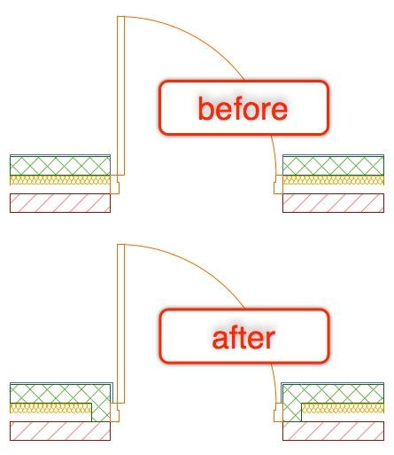
注意： 要使墙皮收口，Interior Reveal（内侧门窗侧壁）必须设置为 0，如下所示：
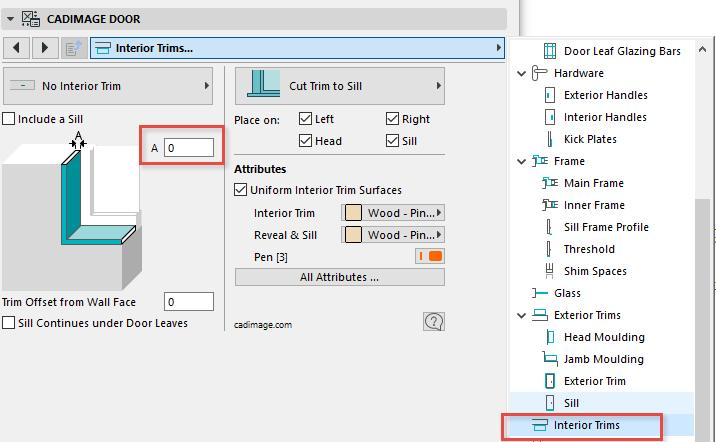
- 选中你的门（已放置在复合墙中的门）
- 转到 Door > Display options > Wall Opening Symbol（门 > 显示选项 > 墙体开口符号）视图展开项：
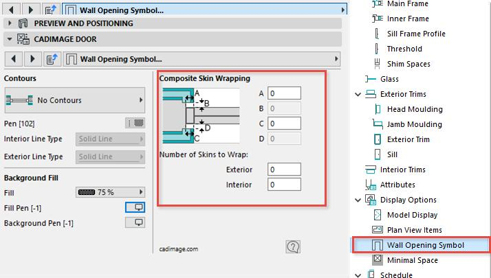
- 保持外部设置不变
- 将内部设置修改为如下：
- Wrap（包覆）= 2
- Extend to Opening（延伸至开口）= 12
- Offset（偏移量）= 取决于门所在的墙体构造。在本示例中已自动设置为 -100。
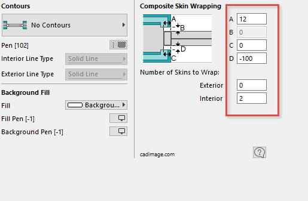
- 点击 OK 保存设置并退出对话框
- 现在你会注意到窗边缘出现了四个"智能热点"（菱形的洋红色斑点，而非圆形的黑色热点）：
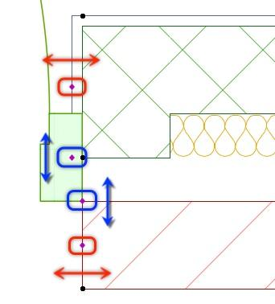
- 点击热点 [A] 并拖动到点 [B] 以封闭空腔：
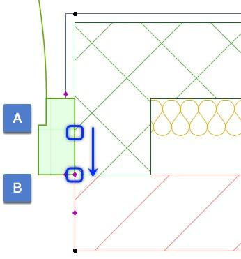
注意： 在其他构造方式中，该空腔通常保持敞开并用预制的封堵件填充——通常作为 2D 对象放置。
Quick Start
Once a Door is placed in a composite wall, it is necessary to configure the returns in order to close the cavity. You can do this via the settings under Door > Wall Opening.
Exercise
In this exercise, we will use a standard Cavity Wall construction (100mm brick, 100mm cavity including insulation, 100mm block and plaster finish) and we will return the inner two skins.
Note: For the skins to return, theInterior Reveal must be set to 0 as highlighted below:
- Select your door (one which has already been placed in composite wall)
- Go to Door > Display options> Wall Opening Symbol View twirl-down:
- Leave the Exterior settings as they are
- Modify the Interior settings to be as follows:
- Wrap = 2
- Extend to Opening = 12
- Offset = this will depend on the wall structure the door is placed in. In this example, the -100 has been set automatically.
- Click OK to save your settings and exit the dialogue
- You will now notice four 'intelligent hotspots' on the edge of your window (diamond shaped magenta spots, rather than circular black ones):
- Close the cavity by clicking on the hotspot [A] and dragging to point [B]:
NOTE: In other construction techniques, this cavity is left open and filled with a prefabricated closure – usually placed as a 2D Object.
英文原文对照Official English Original
Quick Start
Once a Door is placed in a composite wall, it is necessary to configure the returns in order to close the cavity. You can do this via the settings under Door > Wall Opening.
Exercise
In this exercise, we will use a standard Cavity Wall construction (100mm brick, 100mm cavity including insulation, 100mm block and plaster finish) and we will return the inner two skins.
Note: For the skins to return, theInterior Reveal must be set to 0 as highlighted below:
- Select your door (one which has already been placed in composite wall)
- Go to Door > Display options> Wall Opening Symbol View twirl-down:
- Leave the Exterior settings as they are
- Modify the Interior settings to be as follows:
- Wrap = 2
- Extend to Opening = 12
- Offset = this will depend on the wall structure the door is placed in. In this example, the -100 has been set automatically.
- Click OK to save your settings and exit the dialogue
- You will now notice four 'intelligent hotspots' on the edge of your window (diamond shaped magenta spots, rather than circular black ones):
- Close the cavity by clicking on the hotspot [A] and dragging to point [B]:
NOTE: In other construction techniques, this cavity is left open and filled with a prefabricated closure – usually placed as a 2D Object.
"自动文本"明细表注释
'Autotext' schedule notes
在 Window+Door Schedule Notes Manager（窗+门明细表注释管理器）中，你可以在注释中创建自动文本以调取相关数据。
例如：
{}
{}
只需如下输入自动文本即可完成：
你可以将这些数据作为"自动文本"标签包含在 Ci Tools > Doors+Windows schedule（门+窗明细表）的明细表注释中
以下"自动文本"可用：
- Location（位置）
- Zone number（房间编号）:
- Zone name（房间名称）:
- Schedule（明细表）
- Total Area（总面积）:
- Daylight Area（采光面积）:
- Clear Glazed Area（透明玻璃面积）:
- Vented Area（可开启面积）:
- Thermal U Value（传热系数 U 值）:
- Thermal UA Value（传热系数 UA 值）:
- Parameters for Listing（列项参数）
General（通用）
Operation Type（操作类型）:
- Glazing（玻璃）:
- Finish（饰面）:
- Note/Remarks（注释/备注）:
- Source（来源）
Manufacturer（制造商）:
- Unit Cost（单价）:
- Location（位置）
Location（位置）:
- Elevation（立面）:
- Fittings（配件）
Hardware Set（五金组）:
- Lockset（锁具）:
- Hinges（铰链）:
- Accessories（附件）:
- Details（细部）
Header Detail（上楣细部）:
- Jamb Detail（门窗套细部）:
- Sill Detail（窗台细部）:
- Performance（性能）
Fire Rating（耐火等级）:
- Acoustic Rating（隔声等级）:
- Heat Transfer（传热）:
- Total Glass Area（玻璃总面积）:
- Total Glass Perimeter（玻璃总周长）:
- Surfaces（表面）
All glass surfaces（所有玻璃表面）:
- All frame surfaces（所有框料表面）:
- Timber reveal surface（木质侧壁表面）:
- All trim surfaces（所有套线表面）:
- Exterior trim surface（外部套线表面）:
- Interior trim surface（内部套线表面）:
In your Window+Door Schedule Notes Manager, you can create Autotext in your notes to pull through that data.
For Example:
You do this simply by typing in the Autotext as below:
You can include this data as 'autotext' tags in the schedule notes of the Ci Tools > Doors+Windows schedule
The following 'autotexts' are available:
- Location
Zone number:
- Zone name:
- Schedule
Total Area:
- Daylight Area:
- Clear Glazed Area:
- Vented Area:
- Thermal U Value:
- Thermal UA Value:
- Parameters for Listing
General
Operation Type:
- Glazing:
- Finish:
- Note/Remarks:
- Source
Manufacturer:
- Unit Cost:
- Location
Location:
- Elevation:
- Fittings
Hardware Set:
- Lockset:
- Hinges:
- Accessories:
- Details
Header Detail:
- Jamb Detail:
- Sill Detail:
- Performance
Fire Rating:
- Acoustic Rating:
- Heat Transfer:
- Total Glass Area:
- Total Glass Perimeter:
- Surfaces
All glass surfaces:
- All frame surfaces:
- Timber reveal surface:
- All trim surfaces:
- Exterior trim surface:
- Interior trim surface:
英文原文对照Official English Original
In your Window+Door Schedule Notes Manager, you can create Autotext in your notes to pull through that data.
For Example:
You do this simply by typing in the Autotext as below:
You can include this data as 'autotext' tags in the schedule notes of the Ci Tools > Doors+Windows schedule
The following 'autotexts' are available:
- Location
Zone number:
- Zone name:
- Schedule
Total Area:
- Daylight Area:
- Clear Glazed Area:
- Vented Area:
- Thermal U Value:
- Thermal UA Value:
- Parameters for Listing
General
Operation Type:
- Glazing:
- Finish:
- Note/Remarks:
- Source
Manufacturer:
- Unit Cost:
- Location
Location:
- Elevation:
- Fittings
Hardware Set:
- Lockset:
- Hinges:
- Accessories:
- Details
Header Detail:
- Jamb Detail:
- Sill Detail:
- Performance
Fire Rating:
- Acoustic Rating:
- Heat Transfer:
- Total Glass Area:
- Total Glass Perimeter:
- Surfaces
All glass surfaces:
- All frame surfaces:
- Timber reveal surface:
- All trim surfaces:
- Exterior trim surface:
- Interior trim surface:
将草图门转换为完整的参数化门
Convert a Sketch door to a full parametric door
Cadimage Door、Cadimage Window 和 Cadimage Garage Door 可用于建模门和／或窗。
- Cadimage Window 提供的灵活性最大。它可用于建模绝大多数窗和许多门。
- Cadimage Door 仅用于建模门，不过门的周围可以包含一些玻璃。
- Cadimage Garage Door 只能用于建模从底部升起、且周边没有玻璃的门。
以下文章介绍了如何使用这三个库部件中的某一个来建模门或窗。
不过总的来说，流程始终是相同的：
- 决定使用哪个库部件。
- 打开门或窗的设置对话框。
- 选择设计起点。
- 编辑设置。
1. 决定使用哪个库部件
要决定使用这三个库部件中的哪一个，请遵循以下简单的准则：
- 建模窗时，使用 Cadimage Window。
- 建模简单的门时（即使包含简单的玻璃），使用 Cadimage Door。
- 建模两侧或上方带多块玻璃面板的门时，使用 Cadimage Window。
- 建模周边无玻璃的车库门时，使用 Cadimage Garage Door。
2. 打开门或窗的设置对话框
Cadimage Window 是 ArchiCAD 的 Window（窗）构件。要打开其窗设置对话框，在 ArchiCAD 工具箱中双击 Window 工具，然后浏览并从 Cadimage Library 中选择 Cadimage Window 库部件。
Cadimage Door 和 Cadimage Garage Door 是 ArchiCAD 的 Door（门）构件。要打开其门设置对话框，在 ArchiCAD 工具箱中双击 Door 工具，然后浏览并从 Cadimage Library 中选择 Cadimage Door 或 Cadimage Garage Door 库部件。
3. 选择设计起点
打开 Settings（设置）对话框后，你会看到使用 Cadimage Door 或 Cadimage Window 工具的两种方式可选。
如果你想通过"绘制"门或窗来开始设计过程，请选择 Sketch a Window（或 Sketch a Door）。这种方式在设计的最早阶段非常有用——此时你只是想把矩形的门或窗放入项目中以表达设计概念。对于窗来说，这也是建模含有大量中梃的窗（如店面／商业项目）的好起点。左侧菜单顶部将选中 Sketch Design（草图设计）工作模式。
如果你选择从头开始 Parametrically Design a New Window（或 Parametrically Design a New Door），则会直接进入 Settings 对话框的一个页面，可在其中定义窗的分格。此时将选中 Detailed Design（详细设计）工作模式。
请注意，你可以随时在两种工作模式之间自由切换。
4. 编辑设置
使用左侧菜单导航到 Settings 对话框的各个页面。
对于许多构件，设置被分为 Model（模型）、Surfaces（表面）和 Appearance（外观）三组。使用设置对话框右上方顶部的按钮可在这三组设置之间切换。
Cadimage Door, Cadimage Window and Cadimage Garage Door can be used to model doors and/or windows.
- Cadimage Window provides the greatest flexibility. It can be used to model the vast majority of windows and many doors.
- Cadimage Door is intended to model doors only, although some glazing can be included around the doors.
- Cadimage Garage Door can only be used to model doors that lift up from the base, with no peripheral glazing.
The following articles describe how you can use one or other of these three library parts to model a door or a window.
In summary though, the process is always the same:
- Decide which library part to use.
- Open the Door or Window Settings dialog.
- Choose a design start point.
- Edit the settings.
1. Decide which Library Part to Use
To decide which of the three library parts you should use, follow these simple guidelines:
- To model a window, use Cadimage Window.
- To model a simple door, even if it includes simple glazing, use Cadimage Door.
- To model a door with multiple glazed panels to either side or above it, use Cadimage Window.
- To model a garage door with no peripheral glazing, use Cadimage Garage Door.
2. Open the Door or Window Settings Dialog
Cadimage Window is an ArchiCAD Windowelement. To open its Window Settings dialog, double-click on the Windowtool in the ArchiCAD toolbox, then browse to select the Cadimage Window library part from the Cadimage Library.
Cadimage Door and Cadimage Garage Door are ArchiCAD Doorelements. To open their Door Settings dialogs, double-click on the Doortool in the ArchiCAD toolbox, then browse to select the Cadimage Door or the Cadimage Garage Door library part from the Cadimage Library.
3. Choose a Design Start Point
On opening the Settingsdialog, you will be presented with a choice of two ways to work with the Cadimage Door orCadimage Window tool.
Choose Sketch a Window (or Sketch a Door) if you want to start the design process by 'sketching' a door or window. This approach is useful at the very earliest stage of a design, when you simply want to place rectangular doors or windows into a project in order to present a concept. For windows, it is also a handy starting point for modelling windows with large numbers of mullions (e.g. shop fronts/ commercial work). The Sketch Design mode of working will be selected at the top of the left menu.
If you choose to Parametrically Design a New Window (or Parametrically Design a New Door) from scratch, you will be taken immediately to a page of the Settingsdialog where you can define the window setout. The Detailed Designmode of working will be selected.
Note that you can toggle freely between the working modes at any time.
4. Edit the Settings
Use the left menu to navigate to each page of the Settings dialog.
For many of the components, the settings are grouped as Model, Surfacesand Appearance. Use the buttons at the top, right of the Settings dialog to toggle between these three groups of settings.
英文原文对照Official English Original
Cadimage Door, Cadimage Window and Cadimage Garage Door can be used to model doors and/or windows.
- Cadimage Window provides the greatest flexibility. It can be used to model the vast majority of windows and many doors.
- Cadimage Door is intended to model doors only, although some glazing can be included around the doors.
- Cadimage Garage Door can only be used to model doors that lift up from the base, with no peripheral glazing.
The following articles describe how you can use one or other of these three library parts to model a door or a window.
In summary though, the process is always the same:
- Decide which library part to use.
- Open the Door or Window Settings dialog.
- Choose a design start point.
- Edit the settings.
1. Decide which Library Part to Use
To decide which of the three library parts you should use, follow these simple guidelines:
- To model a window, use Cadimage Window.
- To model a simple door, even if it includes simple glazing, use Cadimage Door.
- To model a door with multiple glazed panels to either side or above it, use Cadimage Window.
- To model a garage door with no peripheral glazing, use Cadimage Garage Door.
2. Open the Door or Window Settings Dialog
Cadimage Window is an ArchiCAD Windowelement. To open its Window Settings dialog, double-click on the Windowtool in the ArchiCAD toolbox, then browse to select the Cadimage Window library part from the Cadimage Library.
Cadimage Door and Cadimage Garage Door are ArchiCAD Doorelements. To open their Door Settings dialogs, double-click on the Doortool in the ArchiCAD toolbox, then browse to select the Cadimage Door or the Cadimage Garage Door library part from the Cadimage Library.
3. Choose a Design Start Point
On opening the Settingsdialog, you will be presented with a choice of two ways to work with the Cadimage Door orCadimage Window tool.
Choose Sketch a Window (or Sketch a Door) if you want to start the design process by 'sketching' a door or window. This approach is useful at the very earliest stage of a design, when you simply want to place rectangular doors or windows into a project in order to present a concept. For windows, it is also a handy starting point for modelling windows with large numbers of mullions (e.g. shop fronts/ commercial work). The Sketch Design mode of working will be selected at the top of the left menu.
If you choose to Parametrically Design a New Window (or Parametrically Design a New Door) from scratch, you will be taken immediately to a page of the Settingsdialog where you can define the window setout. The Detailed Designmode of working will be selected.
Note that you can toggle freely between the working modes at any time.
4. Edit the Settings
Use the left menu to navigate to each page of the Settings dialog.
For many of the components, the settings are grouped as Model, Surfacesand Appearance. Use the buttons at the top, right of the Settings dialog to toggle between these three groups of settings.
设计窗布局
Designing a Window Layout
要设计面板、中梃和横档的布局，请转到 Glazing Panels（玻璃面板）页面。
该页面提供以下控件：
- 选择要编辑的面板。
- 添加和移除面板。
- 更改面板类型（例如将平开面板更改为悬窗）。
- 设置面板宽度。
- 设置开启角度。
- 插入自定义面板（即你在 ARCHICAD 中建模并另存为自定义窗扇的窗扇）。
请注意，面板的部分控件位于其他位置：
- 面板高度在 Shape（形状）页面上设置。
- 玻璃格条（窗棂）可在 Glazing Panels > Glazing Bars 页面上添加到玻璃面板上。
可用设置
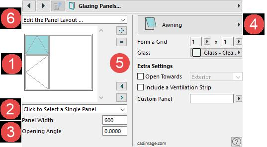
- 点击图片可选择或取消选择窗内的面板。
- 此列表控制当你点击图片中某个窗面板时会发生什么（见下方 Panel Selection Controls）。
- 设置面板宽度（见下方 Panel Width）和开启角度。
- 设置面板类型和玻璃表面。编辑面板的额外设置，包括其开启方向（见下方 Panel Opening Direction）、左侧和右侧开启面板的数量（见下方 Left/Right Opening Panels）、重复网格（见下方 Form a Grid）以及自定义面板类型。
- 移除所选面板，或复制所选面板并以竖向中梃分隔新面板。向左或向右移动所选面板（见下方 Add, Delete and Move Panels）。
- 添加由水平横档分隔的面板（见下方 Edit the Panel Layout）。
Panel Selection Controls（面板选择控件）
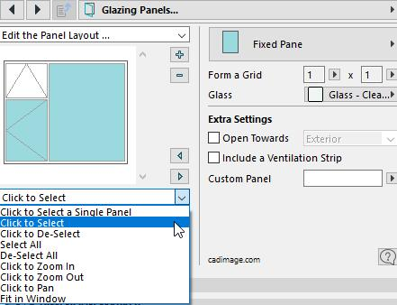
面板选择选项包括：
- Click to Select a Single Panel（点击选择单个面板）—— 你点击的面板将被选中，其他所有面板取消选择。
- Click to Select（点击选择）—— 点击任意数量的面板以选中它们。
- Click to De-Select（点击取消选择）—— 点击已选中的面板以取消选择。
- Select All（全选）—— 所有面板都将被选中。
- De-select All（取消全选）—— 所有面板都将取消选择。
- Click to Zoom In（点击放大）—— 在图片中点击可放大。你点击的点会移到图片中央，图片以更大比例绘制。这有助于选择较小的面板。
- Click to Pan（点击平移）—— 在放大的图片中点击可平移到窗的其他区域。你点击的点会移到图片中央。
- Fit in Window（适应窗口）—— 图片将重新调整大小以适应可用空间。
Add, Delete and Move Panels（添加、删除和移动面板）
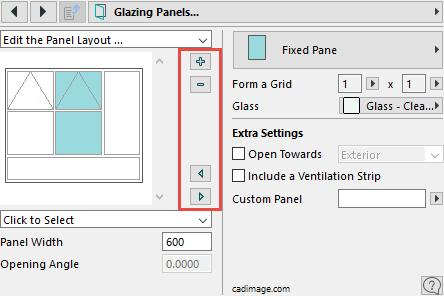
选择图片旁的四个按钮对当前选中的面板进行操作，允许你：
- Add a Panel (+)（添加面板）—— 当前选中的面板将被复制，原面板与复制面板之间以竖向中梃分隔。
- Delete a Panel (-)（删除面板）—— 当前选中的面板将被移除。
- Move a Panel Left (<)（向左移动面板）—— 当前选中的面板将向左移动一个中梃间距。
- Move a Panel Right (>)（向右移动面板）—— 当前选中的面板将向右移动一个中梃间距。
Edit the Panel Layout（编辑面板布局）
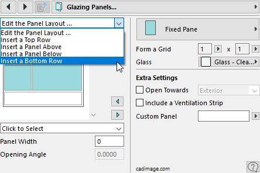
要添加由水平中梃分隔的面板，请使用选择图片上方的菜单。该菜单提供以下控件：
- Insert a Top Row（插入顶行）—— 在窗的顶部插入一行额外面板。此顶行的中梃间距独立于主（中间）行，也独立于底行。请注意，窗布局中只能包含一行顶行。
- Insert a Bottom Row（插入底行）—— 在窗的底部插入一行额外面板。此底行的中梃间距独立于主（中间）行，也独立于顶行。请注意，窗布局中只能包含一行底行。
- Insert a Panel Above/Below（在面板上方/下方插入面板）—— 在窗的主（中间）行中任一选中面板的上方或下方添加一个额外面板。请注意，主（中间）行的每个面板最多只能包含一个额外的上方面板和一个额外的下方面板。
Panel Width（面板宽度）
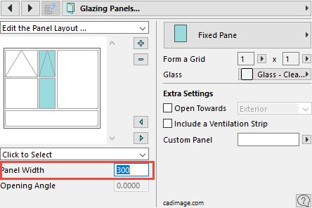
所选面板的宽度可在选择图片下方的 Panel Width 字段中设置。
- 若要设置固定的面板宽度，输入一个非零数值（例如 300mm 表示 300mm 宽的面板）。
- 如果希望所选面板填满窗框内的可用空间，输入零作为面板宽度。
- 如果所有面板宽度都设置为非零尺寸，面板宽度的比例将保持不变。实际宽度会根据窗的总宽度进行调整。
Form a Grid（形成网格）
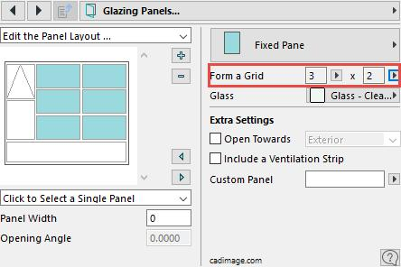
所选面板可以用中梃和横档分割，形成矩形网格。如果你希望某块面板被精确复制，此控件会很有用。网格内的各个面板没有单独的控件。
Panel Opening Direction（面板开启方向）
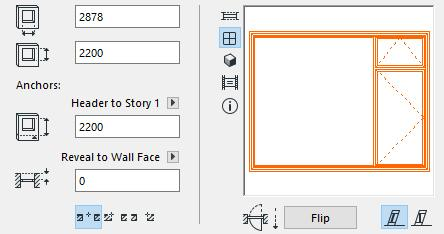
默认情况下，所有面板都沿将窗放入墙体时所指示的方向开启。如果面板开启方向错误（即应向墙体室内侧开启却开启到了室外侧），使用 Flip（翻转）按钮反转开启方向。
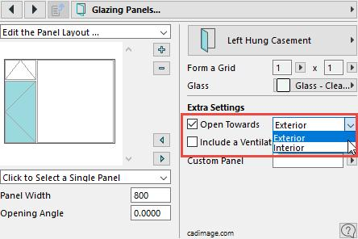
不过，如果你希望某些面板向墙体外侧开启、另一些向内侧开启，请将 Open Towards（开启朝向）复选框设为 On，然后为每个面板单独设置开启方向。
Left/Right Opening Panels（左侧/右侧开启面板）
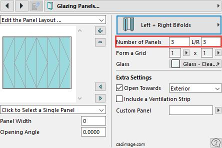
某些面板（如折叠面板或推拉面板）由多个较小面板组成。对于这些面板，使用提供的控件设置左侧或右侧的面板数量。
To design the layout of panels, mullions and transoms, go to the Glazing Panels page.
This page provides controls to:
- Select panels to edit.
- Add and remove panels.
- Change panel types (e.g. change a casement panel to an awning).
- Set panel widths.
- Set opening angles.
- Insert a custom panel (i.e. one that you modelled in ARCHICAD and saved as a custom Window Sash).
Note that some controls for the panels are located elsewhere:
- Panel heights are set on the Shape page.
- Glazing bars (muntins) can be added to glazed panels on the Glazing Panels > Glazing Bars page.
Available Settings
- Click on the image to select or de-select panels within the window.
- This list controls what will happen when you click on a window panel in the image (see Panel Selection Controls below).
- Set the panel width (see Panel Width below) and opening angle.
- Set the panel type and glass surface. Edit extra settings for the panel including its opening direction (see Panel Opening Direction below), number of opening panels left and right (see Left/Right Opening Panels below), a repeating grid (see Form a Grid below), and a custom panel type.
- Remove selected panels, or duplicate selected panels with a vertical mullion separating the new panels. Move a selected panel left or right (see Add, Delete and Move Panels below).
- Add panels separated by horizontal transoms (see Edit the Panel Layout below).
Panel Selection Controls
Panel selection options include:
- Click to Select a Single Panel - the panel you click on will become selected, all other panels de-selected.
- Click to Select - click on any number of panels to select them.
- Click to De-Select - click on selected panels to de-select them.
- Select All - all panels will become selected.
- De-select All - all panels will become de-selected.
- Click to Zoom In - click in the image to zoom in. The point you click on will move to the center of the image, and the image will be drawn at a larger scale. This can help with selection of small panels.
- Click to Pan - click in the zoomed image to pan to a different area of the window. The point you click on will move to the center of the image.
- Fit in Window - the image will re-size to fit in the available space.
Add, Delete and Move Panels
The four buttons beside the selection image operate on the panels that are currently selected and allow you to:
- Add a Panel (+) - Currently selected panels will be duplicated, with a vertical mullion separating the original and duplicate panels.
- Delete a Panel (-) - Currently selected panels will be removed.
- Move a Panel Left (<) - Currently selected panels will be moved one mullion to the left.
- Move a Panel Right (>) - Currently selected panels will be moved one mullion to the right.
Edit the Panel Layout
To add panels that are separated by a horizontal mullion, use the menu located above the selection image. This menu provides controls to:
- Insert a Top Row - inserts an extra row of panels at the top of the window. The mullion spacing for this top row is independent of the main (middle) row, and independent of the bottom row. Note that only one top row can be included in a window layout.
- Insert a Bottom Row - inserts an extra row of panels at the bottom of the window. The mullion spacing for this bottom row is independent of the main (middle) row, and independent of the top row. Note that only one bottom row can be included in a window layout.
- Insert a Panel Above/Below - adds an extra panel above or below any selected panel in the main (middle) row of the window. Note that only one extra upper and one extra lower panel may be included for each of the main (middle) panels.
Panel Width
The width of selected panels can be set in the Panel Width field below the selection image.
- To set a fixed panel width , enter a non-zero value (e.g. 300mm for a 300mm wide panel).
- If you want the selected panel to fill the available space within the window frame, enter zero for the panel width.
- If all panel widths are set to non-zero sizes, the ratio of the panel widths will remain constant. The actual widths will adjust depending on the total width of the window.
Form a Grid
A selected panel may be split with mullions and transoms to form a rectangular grid. This control is useful if you want a panel to be exactly replicated. There is no individual control over the panels within the grid.
Panel Opening Direction
By default, all panels open in the direction indicated when placing the window into the wall. If panels are opening the wrong way (i.e. opening to the exterior side of the wall when they should be opening to the interior side), use the Flip button to reverse the opening direction.
However if you want some panels to open to the exterior side, and some to the interior side of the wall, click the Open Towards checkbox On, and set the opening direction for each panel individually.
Left/Right Opening Panels
Some panels (e.g. bifolding or sliding panels) are made up of a number of smaller panels. For these panels, set the number of panels on the left or right using the controls provided.
英文原文对照Official English Original
To design the layout of panels, mullions and transoms, go to the Glazing Panels page.
This page provides controls to:
- Select panels to edit.
- Add and remove panels.
- Change panel types (e.g. change a casement panel to an awning).
- Set panel widths.
- Set opening angles.
- Insert a custom panel (i.e. one that you modelled in ARCHICAD and saved as a custom Window Sash).
Note that some controls for the panels are located elsewhere:
- Panel heights are set on the Shape page.
- Glazing bars (muntins) can be added to glazed panels on the Glazing Panels > Glazing Bars page.
Available Settings
- Click on the image to select or de-select panels within the window.
- This list controls what will happen when you click on a window panel in the image (see Panel Selection Controls below).
- Set the panel width (see Panel Width below) and opening angle.
- Set the panel type and glass surface. Edit extra settings for the panel including its opening direction (see Panel Opening Direction below), number of opening panels left and right (see Left/Right Opening Panels below), a repeating grid (see Form a Grid below), and a custom panel type.
- Remove selected panels, or duplicate selected panels with a vertical mullion separating the new panels. Move a selected panel left or right (see Add, Delete and Move Panels below).
- Add panels separated by horizontal transoms (see Edit the Panel Layout below).
Panel Selection Controls
Panel selection options include:
- Click to Select a Single Panel - the panel you click on will become selected, all other panels de-selected.
- Click to Select - click on any number of panels to select them.
- Click to De-Select - click on selected panels to de-select them.
- Select All - all panels will become selected.
- De-select All - all panels will become de-selected.
- Click to Zoom In - click in the image to zoom in. The point you click on will move to the center of the image, and the image will be drawn at a larger scale. This can help with selection of small panels.
- Click to Pan - click in the zoomed image to pan to a different area of the window. The point you click on will move to the center of the image.
- Fit in Window - the image will re-size to fit in the available space.
Add, Delete and Move Panels
The four buttons beside the selection image operate on the panels that are currently selected and allow you to:
- Add a Panel (+) - Currently selected panels will be duplicated, with a vertical mullion separating the original and duplicate panels.
- Delete a Panel (-) - Currently selected panels will be removed.
- Move a Panel Left (<) - Currently selected panels will be moved one mullion to the left.
- Move a Panel Right (>) - Currently selected panels will be moved one mullion to the right.
Edit the Panel Layout
To add panels that are separated by a horizontal mullion, use the menu located above the selection image. This menu provides controls to:
- Insert a Top Row - inserts an extra row of panels at the top of the window. The mullion spacing for this top row is independent of the main (middle) row, and independent of the bottom row. Note that only one top row can be included in a window layout.
- Insert a Bottom Row - inserts an extra row of panels at the bottom of the window. The mullion spacing for this bottom row is independent of the main (middle) row, and independent of the top row. Note that only one bottom row can be included in a window layout.
- Insert a Panel Above/Below - adds an extra panel above or below any selected panel in the main (middle) row of the window. Note that only one extra upper and one extra lower panel may be included for each of the main (middle) panels.
Panel Width
The width of selected panels can be set in the Panel Width field below the selection image.
- To set a fixed panel width , enter a non-zero value (e.g. 300mm for a 300mm wide panel).
- If you want the selected panel to fill the available space within the window frame, enter zero for the panel width.
- If all panel widths are set to non-zero sizes, the ratio of the panel widths will remain constant. The actual widths will adjust depending on the total width of the window.
Form a Grid
A selected panel may be split with mullions and transoms to form a rectangular grid. This control is useful if you want a panel to be exactly replicated. There is no individual control over the panels within the grid.
Panel Opening Direction
By default, all panels open in the direction indicated when placing the window into the wall. If panels are opening the wrong way (i.e. opening to the exterior side of the wall when they should be opening to the interior side), use the Flip button to reverse the opening direction.
However if you want some panels to open to the exterior side, and some to the interior side of the wall, click the Open Towards checkbox On, and set the opening direction for each panel individually.
Left/Right Opening Panels
Some panels (e.g. bifolding or sliding panels) are made up of a number of smaller panels. For these panels, set the number of panels on the left or right using the controls provided.
门扇
Door Leaves
Cadimage Door 和 Cadimage Window 都可以包含可开启的门。本文章概述了门扇样式的选项。
请注意，在门扇样式方面，Cadimage Door 比 Cadimage Window 有更多选项。例如，Cadimage Door 可以为双扇门的任一侧单独设置门扇样式。
本文讨论 Cadimage Door 的设置。Cadimage Window 的设置相同或更为简单。
要定义门扇样式，请转到 Door Leaf（门扇）页面。
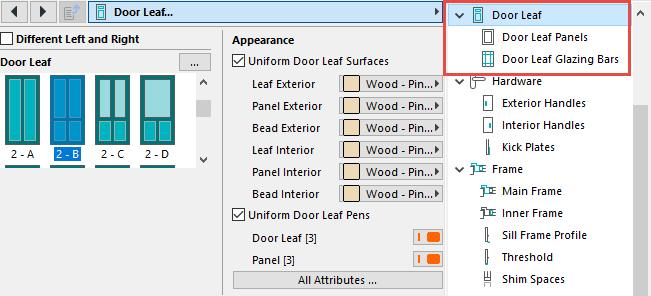
该页面包含子页面——Door Leaf Panels（门扇面板）和 Door Leaf Glazing Bars（门扇玻璃格条）。这一组页面共同提供以下控件：
- 选择门扇样式。
- 设置属性（表面和笔）。
- 调整横档和面板的尺寸。
- 选择填充面板类型。
- 为门扇内的玻璃面板应用玻璃格条（即窗棂）样式。
请注意，门扇的部分控件位于其他位置：
- 门扇宽度和高度在 Door Type（门类型）页面上设置。
- 门五金（把手和踢脚板）可在 Hardware（五金）页面上添加。
- 平面视图符号选项在 Display Options（显示选项）页面上设置。
可用设置
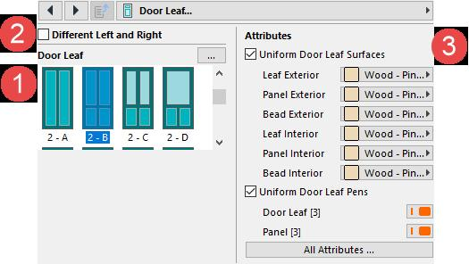
Door Leaf 页面上的设置包括：
- 一组可选的门扇样式。门内的面板可以是固定玻璃，也可以是你所选的某种面板类型。浅蓝色矩形表示玻璃面板，中蓝色矩形表示所选的填充面板。请注意，这些样式还可以在 Door Leaf Panels 和 Door Leaf Glazing Bars 页面上进一步调整（见下方 Door Leaf Style）。' ... ' 按钮会将你带到 Door Leaf Panels 页面。
- 对于 Cadimage Door，你可以为双扇门的任一侧选择不同样式（见下方 Different Left and Right）。
- 设置门扇的表面和视图笔属性（见下方 Door Leaf Surfaces）。要编辑门的全部属性综合列表，请点击 All Attributes...（所有属性）按钮。
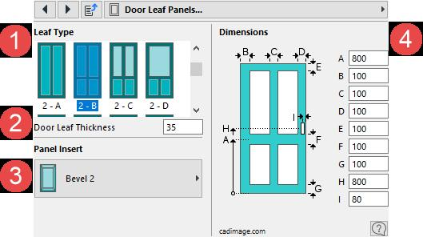
Door Leaf Panels 页面上的设置包括：
- 一组基本门扇样式。
- 设置门扇厚度的字段。
- 一组填充面板类型。
- 设置横档宽度和高度尺寸的字段。
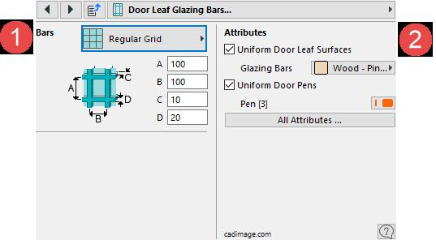
Door Leaf Glazing Bars 页面上的设置包括：
- 一组玻璃格条样式，以及玻璃格条的尺寸。
- 玻璃格条的属性（表面和笔）设置。
Door Leaf Style（门扇样式）
定义门扇样式的第一步是从菜单中选择一个基本样式。你可以在 Door Leaf 页面上完成此操作。但如果点击 '...' 按钮，还可以选择偏好的填充面板，并设置门扇厚度和横档尺寸。
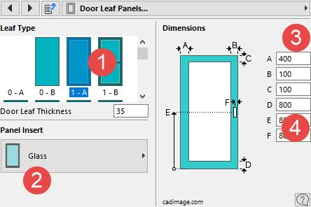
例如，要定义一个包含玻璃安全面板的简单门扇，你需要：
- 将基本 Leaf Type（门扇类型）选择为 1-A。
- 将 Panel Insert（面板填充）选择为 Glass（玻璃）。
- 设置铰接竖框宽度 A，将玻璃面板推向门的把手一侧。
- 设置底横档宽度 D，将玻璃面板向上推至玻璃面板的高度。
Different Left and Right（左右不同）
对于 Cadimage Door，可以为双开门中左开和右开的门选择不同的门扇。为此将 Different Left and Right 复选框设置为 On。
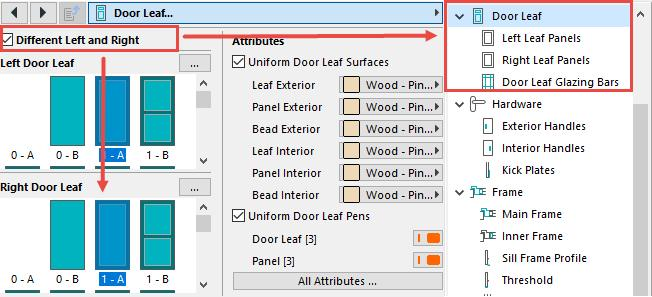
对话框将发生变化：
- 菜单中会出现额外的页面，可单独编辑两种门扇样式。
- 会出现第二个选择字段，允许为左门扇和右门扇分别选择不同的基本门扇类型。
如果两个门扇应相同，请将 Different Left and Right 复选框设置为 Off，并同时编辑两个门扇的设置。
Door Leaf Surfaces（门扇表面）
门扇可设置为具有统一表面（将 Uniform Door Leaf Surfaces（门扇统一表面）设为 On），也可分别为门扇的室内外表面以及横档、面板和压条选择单独的表面。
玻璃格条（即窗棂）的表面可在 Door Leaf Glazing Bars 页面上设置。但你无法为玻璃格条分别设置室内和室外表面。
Both the Cadimage Door and Cadimage Window can include opening doors. Options for door leaf style are outlined in this article.
Note that the Cadimage Door has more options than the Cadimage Window for door leaf style. For instance, the Cadimage Door has an option to set the leaf style independently for either side of a 2-leaf door.
This article deals with the Cadimage Door settings. The settings for Cadimage Window are the same or simpler.
To define the door leaf style, go to the Door Leaf page.
This page includes sub-pages - Door Leaf Panels and Door Leaf Glazing Bars. Together this group of pages provides controls to:
- Select a door leaf style.
- Set attributes (surface and pens).
- Adjust the dimension of the rails and panels.
- Choose infill panel type.
- Apply a glazing bar (i.e. muntin) pattern to glazed panels within the door leaf.
Note that some controls for the door leaf are located elsewhere:
- Leaf width and height are set on the Door Type page.
- Door furniture (handles and kick plates) can be added on the Hardware pages.
- Plan view symbol options are set on the Display Options pages.
Available Settings
Settings on the Door Leaf page include:
- A selection of door leaf styles to choose from. Panels within the doors may be either fixed glass, or a panel type of your selection. The light blue rectangles indicate a glass panel, the mid-blue rectangles indicate a selected infill panel. Note that these styles may be further adjusted on the Door Leaf Panels and Door Leaf Glazing Bars pages (see Door Leaf Style below). The ' ... ' button will take you to the Door Leaf Panels page.
- For the Cadimage Door , you can choose a different style for either side of a 2-leaf door (see Different Left and Right below).
- Set surface and view pen attributes for the door leaf (see Door Leaf Surfaces below). To edit a comprehensive list of all attributes for the door, click on the All Attributes... button.
Settings on the Door Leaf Panels page include:
- A selection of basic door leaf styles.
- A field to set the leaf thickness.
- A selection of infill panel types.
- Fields to set the dimension of rail widths and heights.
Settings on the Door Leaf Glazing Bars page include:
- A selection of glazing bar patterns, and dimensions for the glazing bars.
- Attribute (surface and pen) settings for the glazing bars.
Door Leaf Style
The first step in defining the door leaf style, is to select a basic style from the menu. You can do this on the Door Leaf page. However, if you click on the '...' button, you can choose the preferred infill panels, and set the leaf thickness and rail dimensions too.
For example, to define a simple door leaf that includes a glazed security panel, you would:
- Select basic Leaf Type as 1-A .
- Choose the Panel Insert to be Glass .
- Set the hinged stile width A to push the glass panel across to the handle side of the door.
- Set the bottom rail width D to push the glass panel up to the height of the glazed panel.
Different Left and Right
For the Cadimage Door, it's possible to choose a different door leaf for left and right hung doors in a double door. Set the Different Left and Right checkbox to On to do this.
The dialog will change:
- Extra pages will appear in the menu to allow individual editing of the two door leaf styles.
- A second selection field will appear to allow selection of a different basic leaf type for left and right door leaves.
If both door leaves should be the same, set the the Different Left and Right checkbox to Off, and edit the settings for both door leaves simultaneously.
Door Leaf Surfaces
Door leaves may be set to have a uniform surface (set Uniform Door Leaf Surfaces to On), or else individual surfaces may be selected for the interior and exterior of the door leaf, and for the rails, panels and beading.
A surface for glazing bars (i.e. muntins) can be set on the Door Leaf Glazing Bars page. However, you can not set separate interior and exterior surfaces for glazing bars.
英文原文对照Official English Original
Both the Cadimage Door and Cadimage Window can include opening doors. Options for door leaf style are outlined in this article.
Note that the Cadimage Door has more options than the Cadimage Window for door leaf style. For instance, the Cadimage Door has an option to set the leaf style independently for either side of a 2-leaf door.
This article deals with the Cadimage Door settings. The settings for Cadimage Window are the same or simpler.
To define the door leaf style, go to the Door Leaf page.
This page includes sub-pages - Door Leaf Panels and Door Leaf Glazing Bars. Together this group of pages provides controls to:
- Select a door leaf style.
- Set attributes (surface and pens).
- Adjust the dimension of the rails and panels.
- Choose infill panel type.
- Apply a glazing bar (i.e. muntin) pattern to glazed panels within the door leaf.
Note that some controls for the door leaf are located elsewhere:
- Leaf width and height are set on the Door Type page.
- Door furniture (handles and kick plates) can be added on the Hardware pages.
- Plan view symbol options are set on the Display Options pages.
Available Settings
Settings on the Door Leaf page include:
- A selection of door leaf styles to choose from. Panels within the doors may be either fixed glass, or a panel type of your selection. The light blue rectangles indicate a glass panel, the mid-blue rectangles indicate a selected infill panel. Note that these styles may be further adjusted on the Door Leaf Panels and Door Leaf Glazing Bars pages (see Door Leaf Style below). The ' ... ' button will take you to the Door Leaf Panels page.
- For the Cadimage Door , you can choose a different style for either side of a 2-leaf door (see Different Left and Right below).
- Set surface and view pen attributes for the door leaf (see Door Leaf Surfaces below). To edit a comprehensive list of all attributes for the door, click on the All Attributes... button.
Settings on the Door Leaf Panels page include:
- A selection of basic door leaf styles.
- A field to set the leaf thickness.
- A selection of infill panel types.
- Fields to set the dimension of rail widths and heights.
Settings on the Door Leaf Glazing Bars page include:
- A selection of glazing bar patterns, and dimensions for the glazing bars.
- Attribute (surface and pen) settings for the glazing bars.
Door Leaf Style
The first step in defining the door leaf style, is to select a basic style from the menu. You can do this on the Door Leaf page. However, if you click on the '...' button, you can choose the preferred infill panels, and set the leaf thickness and rail dimensions too.
For example, to define a simple door leaf that includes a glazed security panel, you would:
- Select basic Leaf Type as 1-A .
- Choose the Panel Insert to be Glass .
- Set the hinged stile width A to push the glass panel across to the handle side of the door.
- Set the bottom rail width D to push the glass panel up to the height of the glazed panel.
Different Left and Right
For the Cadimage Door, it's possible to choose a different door leaf for left and right hung doors in a double door. Set the Different Left and Right checkbox to On to do this.
The dialog will change:
- Extra pages will appear in the menu to allow individual editing of the two door leaf styles.
- A second selection field will appear to allow selection of a different basic leaf type for left and right door leaves.
If both door leaves should be the same, set the the Different Left and Right checkbox to Off, and edit the settings for both door leaves simultaneously.
Door Leaf Surfaces
Door leaves may be set to have a uniform surface (set Uniform Door Leaf Surfaces to On), or else individual surfaces may be selected for the interior and exterior of the door leaf, and for the rails, panels and beading.
A surface for glazing bars (i.e. muntins) can be set on the Door Leaf Glazing Bars page. However, you can not set separate interior and exterior surfaces for glazing bars.
门侧窗与门楣窗
Door Sidelights and Overlights
要为 Cadimage Door 周围的玻璃选择面板布局和设置，请转到 Glazing Panels（玻璃面板）页面。该页面包含玻璃面板的基本设置：
- Layout（布局）。
- Dimensions（尺寸）。
- Surfaces（表面）。
子页面提供额外的控件：
- Glazing Panels > Sidelight Panels —— 为侧窗选择单个面板类型。
- Glazing Panels > Overlight Panels —— 为门楣窗选择单个面板类型。
- Glazing Panels > Glazing Bars —— 为侧窗和门楣窗添加玻璃格条（即窗棂）。
请注意，侧窗和门楣窗的部分控件位于其他位置：
- 侧窗宽度和门楣窗高度在 Shape（形状）页面上设置。
- 玻璃表面在 Glass（玻璃）页面上设置。
可用设置
Glazing Panels（玻璃面板）
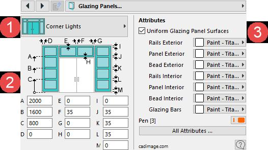
- 从菜单中选择侧窗／门楣窗的基本布局（见下方 Panel Layout）。
- 设置分隔横档的高度和宽度（见下方 Rail Dimensions）。
- 设置面板的属性（表面和视图笔）。
Glazing Panels > Sidelight Panels（玻璃面板 > 侧窗面板）
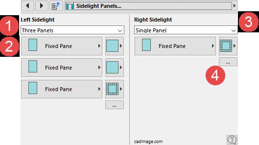
- 为左侧窗选择内部布局选项。根据你所选的面板布局选项（见下方 Panel Layout），此列表中的选项会更多或更少。
- 对内部布局中的每个面板，选择面板类型和玻璃格条（窗棂）的布置方式（见下方 Glazing Bars Placement）。
- 为右侧窗选择内部布局选项，并选择面板类型和玻璃格条布置方式。
- 如需更多玻璃格条设置，点击 ' ... ' 按钮。
Glazing Panels > Overlight Panels（玻璃面板 > 门楣窗面板）
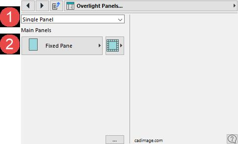
- 为门楣窗选择内部布局选项。根据你所选的面板布局选项（见下方 Panel Layout），此列表中的选项会更多或更少。
- 对内部布局中的每个面板，选择面板类型和玻璃格条（窗棂）的布置方式（见下方 Glazing Bars Placement）。
- 如需更多玻璃格条设置，点击 ' ... ' 按钮。
Glazing Panels > Glazing Bars（玻璃面板 > 玻璃格条）
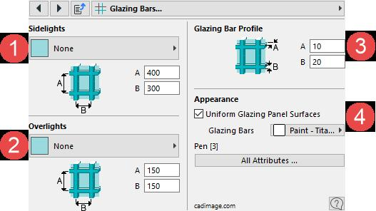
- 为侧窗选择样式，并设置格条间距尺寸。
- 为门楣窗选择样式，并设置格条间距尺寸。
- 设置格条的宽度和厚度。
- 为玻璃格条选择表面和视图笔。
Panel Layout（面板布局）
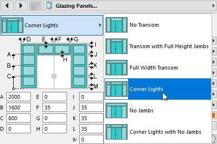
此控件允许你选择主框料围绕玻璃面板的构造方式。选项包括：
- No Transom（无横档）—— 玻璃面板由竖向中梃与门扇分隔。不包含水平横档。
- Transom with Full Height Jambs（带通高侧框的横档）—— 竖向中梃将玻璃与门扇分隔。水平横档在竖向中梃之间横跨门扇顶部。
- Full Width Transom（通宽横档）—— 水平横档横跨门的整个宽度，将门楣窗与门扇和侧窗分隔。竖向中梃一直延伸到横档处。这形成一个通宽的门楣窗。
- Corner Lights（角窗）—— 通高竖向中梃与通宽水平横档相交。这为门楣窗、侧窗和两个角窗分别形成独立空间。
- No Jambs（无侧框）—— 通宽水平横档将门楣窗与门扇和侧窗分隔。不包含竖向中梃。门扇直接铰接在侧窗上。
- Corner Lights with No Jambs（无侧框的角窗）—— 通宽水平横档将门楣窗与门扇和侧窗分隔。门楣窗在两端各由一道小的竖向横档分隔，形成角窗。门扇直接铰接在侧窗上。
Rail Dimensions（横档尺寸）
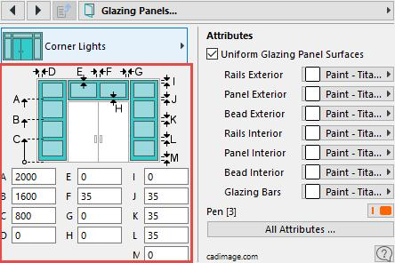
设置分隔并框定侧窗和门楣窗面板的横档的高度和宽度。
请注意，根据侧窗和门楣窗的内部布局，这些横档并非全部都会被插入。
Glazing Bars Placement（玻璃格条布置）
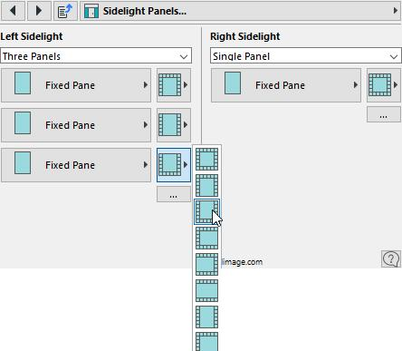
对于侧窗或门楣窗的每个面板，你可以选择玻璃格条的施加方式。
- 对于简单样式（如 Regular Grid，规则网格），选择是否将玻璃格条施加到每个面板。
- 对于 Edge Grid（边缘网格）或 Edge Bars（边缘格条），选择在头部、窗台、左侧框和右侧框的任意组合上包含格条。
To choose panel layout and settings for glazing around a Cadimage Door, go to the Glazing Panels page. This page contains basic settings for glazing panel:
- Layout.
- Dimensions.
- Surfaces.
Sub-pages provide extra controls:
- Glazing Panels > Sidelight Panels - choose individual panel types for sidelights.
- Glazing Panels > Overlight Panels - choose individual panel types for overlights.
- Glazing Panels > Glazing Bars - add glazing bars (i.e. muntins) to the sidelights and overlights.
Note that some controls for sidelights and overlights are located elsewhere:
- Sidelight widths and overlight height are set on the Shape page.
- Glass surface is set on the Glass page.
Available Settings
Glazing Panels
- Choose a basic sidelights/overlight layout from the menu (see Panel Layout below).
- Set the heights and widths of dividing rails (see Rail Dimensions below).
- Set attributes (surfaces and view pen) for the panels.
Glazing Panels > Sidelight Panels
- Choose an internal layout option for the left sidelight. Depending on which panel layout option you chose (see Panel Layout below), there will be more or fewer options in this list.
- For each panel of the internal layout, select a panel type and glazing bars (muntins) placement (see Glazing Bars Placement below).
- Choose an internal layout option, and select panel types and glazing bars placement, for the right sidelight.
- For more glazing bar settings, click the ' ... ' button.
Glazing Panels > Overlight Panels
- Choose an internal layout option for the overlight. Depending on which panel layout option you chose (see Panel Layout below), there will be more or fewer options in this list.
- For each panel of the internal layout, select a panel type and glazing bars (muntins) placement (see Glazing Bars Placement below).
- For more glazing bar settings, click the ' ... ' button.
Glazing Panels > Glazing Bars
- Choose a pattern for the sidelights, and set the bar spacing dimensions.
- Choose a pattern for the overlights, and set the bar spacing dimensions.
- Set the bar width and thickness.
- Select a surface and view pen for the glazing bars.
Panel Layout
This control allows you to choose how the main frame is constructed around glazed panels. Options include:
- No Transom - the glazed panels are separated from the door leaves by a vertical mullion. No horizontal transoms are included.
- Transom with Full Height Jambs - vertical mullions separate the glazing from the door leaves. A horizontal transom extends across the top of the door leaves, between the vertical mullions.
- Full Width Transom - a horizontal transom extends across the full width of the door, separating the overlight from door leaves and sidelights. Vertical mullions extend up to the transom. This forms a full-width overlight.
- Corner Lights - full height vertical mullions intersect with a full width horizontal transom. This forms separate spaces for the overlight, the sidelights, and two corner lights.
- No Jambs - a full-width horizontal transom separates the overlight from the door leaves and sidelights. No vertical mullions are included. Door leaves are hinged directly to the sidelights.
- Corner Lights with No Jambs - a full-width horizontal transom separates the overlight from the door leaves and sidelights. The overlight is split by a small vertical transom at either end, forming corner lights. Door leaves are hinged directly to the sidelights.
Rail Dimensions
Set the heights and widths of rails that divide and frame the sidelight and overlight panels.
Note that, depending on the internal layout of the sidelights and overlights, not all of these rails will be inserted.
Glazing Bars Placement
For each panel of a sidelight or overlight, you can choose how the glazing bars are applied.
- For simple patterns (e.g. Regular Grid ), choose whether to apply the glazing bars to each panel.
- For Edge Grid or Edge Bars , choose to include bars on any combination of head, sill, left jamb and right jamb.
英文原文对照Official English Original
To choose panel layout and settings for glazing around a Cadimage Door, go to the Glazing Panels page. This page contains basic settings for glazing panel:
- Layout.
- Dimensions.
- Surfaces.
Sub-pages provide extra controls:
- Glazing Panels > Sidelight Panels - choose individual panel types for sidelights.
- Glazing Panels > Overlight Panels - choose individual panel types for overlights.
- Glazing Panels > Glazing Bars - add glazing bars (i.e. muntins) to the sidelights and overlights.
Note that some controls for sidelights and overlights are located elsewhere:
- Sidelight widths and overlight height are set on the Shape page.
- Glass surface is set on the Glass page.
Available Settings
Glazing Panels
- Choose a basic sidelights/overlight layout from the menu (see Panel Layout below).
- Set the heights and widths of dividing rails (see Rail Dimensions below).
- Set attributes (surfaces and view pen) for the panels.
Glazing Panels > Sidelight Panels
- Choose an internal layout option for the left sidelight. Depending on which panel layout option you chose (see Panel Layout below), there will be more or fewer options in this list.
- For each panel of the internal layout, select a panel type and glazing bars (muntins) placement (see Glazing Bars Placement below).
- Choose an internal layout option, and select panel types and glazing bars placement, for the right sidelight.
- For more glazing bar settings, click the ' ... ' button.
Glazing Panels > Overlight Panels
- Choose an internal layout option for the overlight. Depending on which panel layout option you chose (see Panel Layout below), there will be more or fewer options in this list.
- For each panel of the internal layout, select a panel type and glazing bars (muntins) placement (see Glazing Bars Placement below).
- For more glazing bar settings, click the ' ... ' button.
Glazing Panels > Glazing Bars
- Choose a pattern for the sidelights, and set the bar spacing dimensions.
- Choose a pattern for the overlights, and set the bar spacing dimensions.
- Set the bar width and thickness.
- Select a surface and view pen for the glazing bars.
Panel Layout
This control allows you to choose how the main frame is constructed around glazed panels. Options include:
- No Transom - the glazed panels are separated from the door leaves by a vertical mullion. No horizontal transoms are included.
- Transom with Full Height Jambs - vertical mullions separate the glazing from the door leaves. A horizontal transom extends across the top of the door leaves, between the vertical mullions.
- Full Width Transom - a horizontal transom extends across the full width of the door, separating the overlight from door leaves and sidelights. Vertical mullions extend up to the transom. This forms a full-width overlight.
- Corner Lights - full height vertical mullions intersect with a full width horizontal transom. This forms separate spaces for the overlight, the sidelights, and two corner lights.
- No Jambs - a full-width horizontal transom separates the overlight from the door leaves and sidelights. No vertical mullions are included. Door leaves are hinged directly to the sidelights.
- Corner Lights with No Jambs - a full-width horizontal transom separates the overlight from the door leaves and sidelights. The overlight is split by a small vertical transom at either end, forming corner lights. Door leaves are hinged directly to the sidelights.
Rail Dimensions
Set the heights and widths of rails that divide and frame the sidelight and overlight panels.
Note that, depending on the internal layout of the sidelights and overlights, not all of these rails will be inserted.
Glazing Bars Placement
For each panel of a sidelight or overlight, you can choose how the glazing bars are applied.
- For simple patterns (e.g. Regular Grid ), choose whether to apply the glazing bars to each panel.
- For Edge Grid or Edge Bars , choose to include bars on any combination of head, sill, left jamb and right jamb.
门与窗的可见性条
Door and Window Visibility Strips
Doors+Windows 工具允许按某些国家的法律要求添加可见性条（visibility strips），这在整体上也是良好的实践做法。
可见性条可以通过标准的窗和外门界面添加，如下图所示。
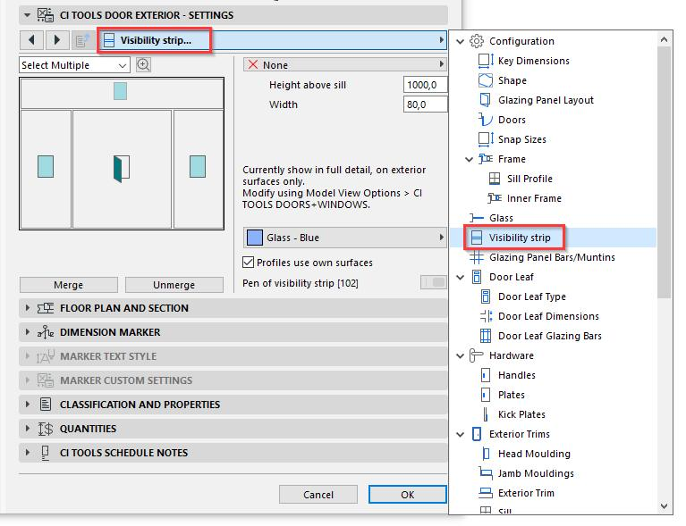
在左侧窗格中选中玻璃面板后，就可以选择要添加何种类型的条。也可以一次选中多个玻璃面板并应用可见性条。还可以对这些面板进行合并和取消合并，以便在面板上均匀铺开样式而不出现衔接问题。
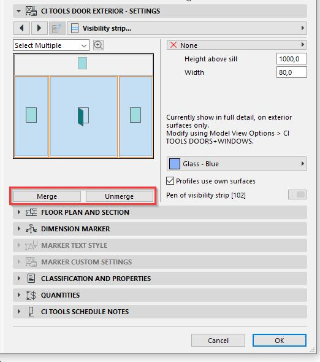
在此例中通过选中门面板，我们现在可以选择要应用哪种类型的可见性条。可以在通用条（Generic Strip）与自行创建的复杂轮廓之间选择。
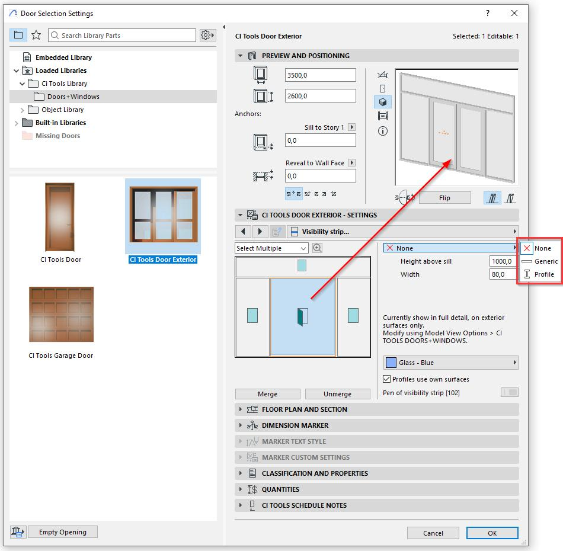
我们先来看通用可见性条。可以为该条的水平中心指定高度，以及条本身的实际高度。还可以指定要显示的 Archicad 表面，在本例中是 'Glass-Blue'（蓝色玻璃）。
请注意：高度是从窗台高度（Sill-height）开始计算的。
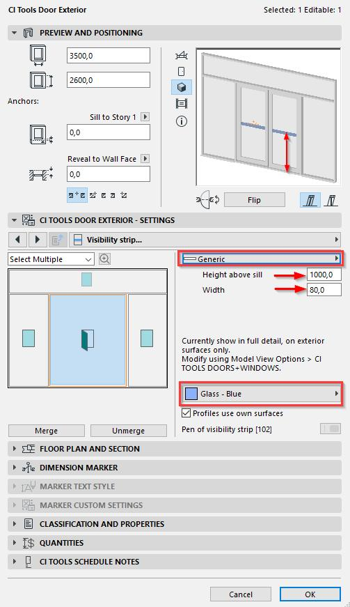
接下来我们看看使用复杂轮廓的效果。
通过选择 Complex Profile（复杂轮廓）选项，你可以选择 Archicad 的任何标准复杂轮廓或自行创建的轮廓。因此可以用复杂轮廓绘制任何标志或文字。
我们将为说明目的创建一个复杂轮廓，其内容为文字 'Visibility'（可见性）。
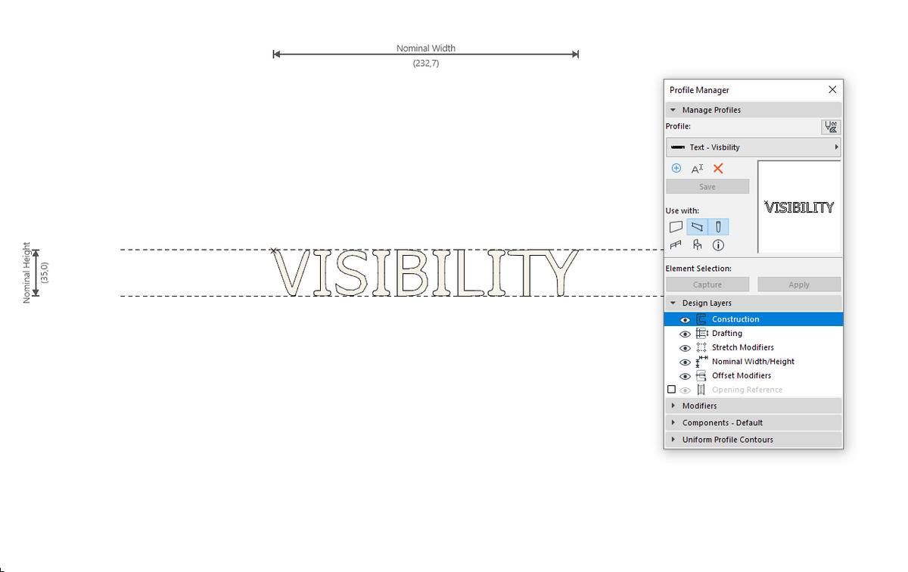
现在我们可以在可见性条设置中选择这个轮廓。
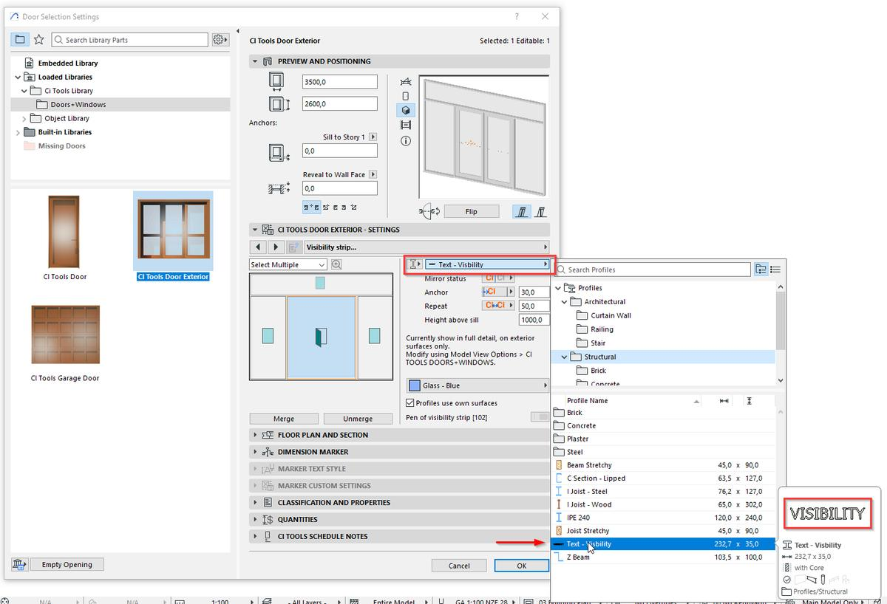
它将使用复杂轮廓中指定的表面来应用。
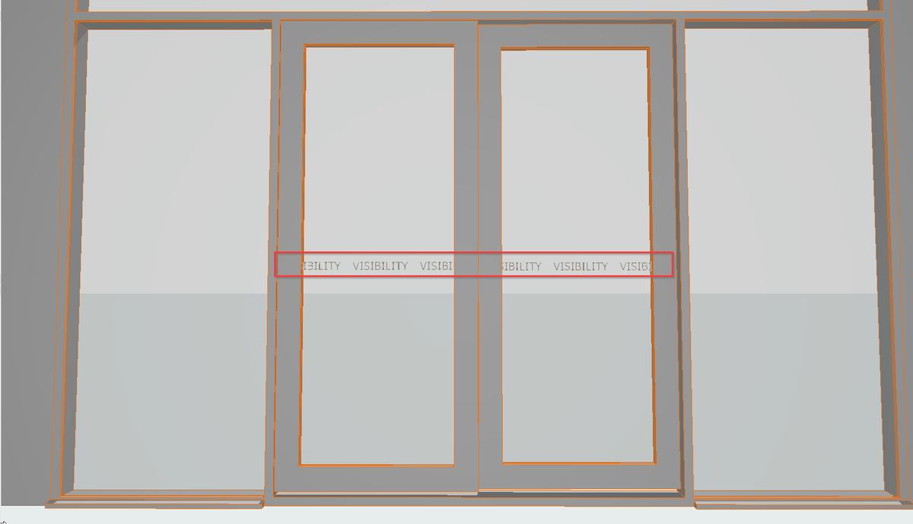
我们还可以取消勾选 'Profiles use own surfaces'（轮廓使用自身表面）复选框，然后选择我们想要的颜色，从而指定不同的表面，效果如下所示。
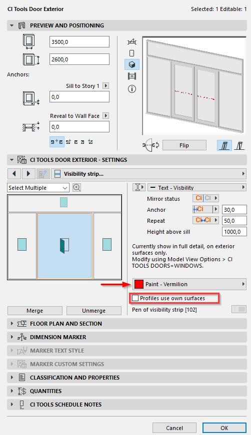
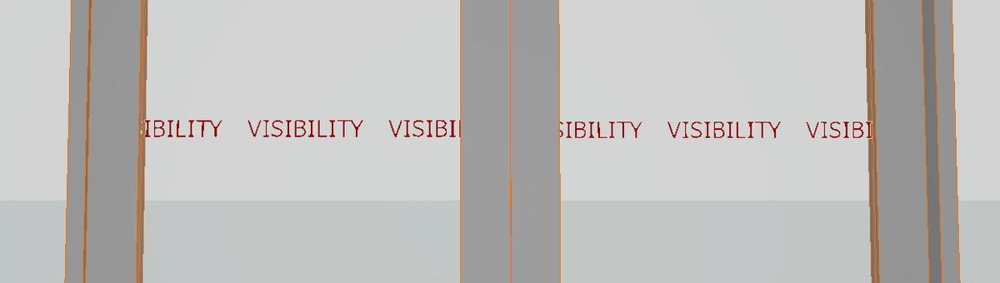
其他可用设置涉及镜像、锚点、重复以及调整窗台以上的高度。
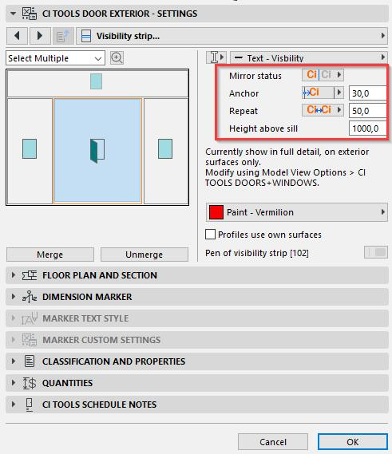
镜像状态允许对轮廓进行镜像。
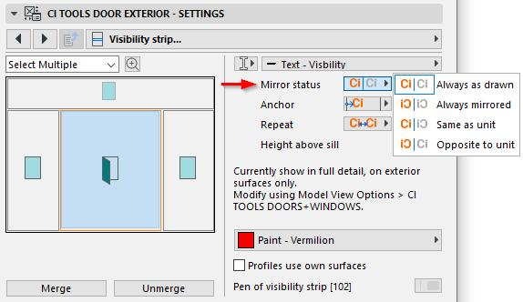
锚点可以调整。
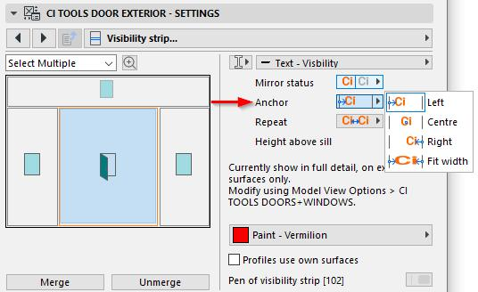
重复可以打开或关闭，并可调整重复轮廓之间的距离。
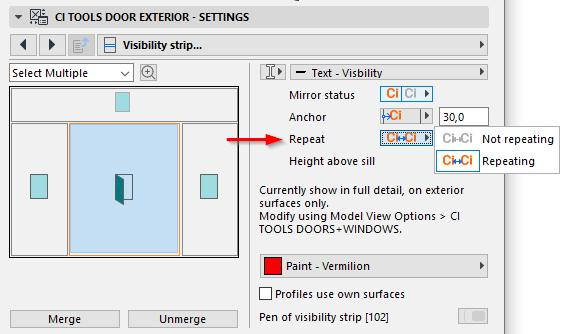
最后，窗台以上的高度（Height above Sill）也可调整。
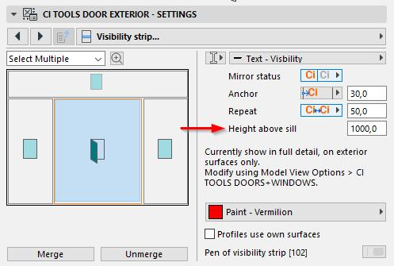
The Doors+Windows tool allows for the addition of visibility strips as is required by law in certain countries, and overall good practice to implement.
The Visibility strip can be added through the standard Window and Exterior Door interface as shown below.
By selecting the glazing panel in the left hand pane, a selection can be made as to what type of strip is to be added. It is possible to select several glazing panels at once and apply the Visibility strips. It is also possible to merge and un-merge these panels for the purposes of spreading a pattern consistently over the panels without continuity problems.
By selecting the Door panel in this instance, we can now select what type of Visibility strip we want to apply. We have a choice between a Generic Strip or to use a complex profile that we can create.
Let us look at the Generic Visibility strip first. We can assign a height to the horizontal centre of the Strip, as well as the actual height of the strip. We can also assign the Archicad Surface that will be displayed, in this case it is ‘Glass-Blue’.
Please note: the height is calculated from the Sill-height.
Next we will look at using a Complex profile.
By electing the Complex Profile option, you can select any of Archicad’s standard Complex Profiles or a created one. It is therefore possible to draw any logo or text as a Complex Profile.
We will create a Complex Profile for the purposes of this explanation that States ‘Visibility’ in text.
We can now select this in our Visibility strip settings.
This will be applied with the Surfaces as assigned in the Complex Profile
We can also assign a different Surface by unchecking the ‘Profiles use own surfaces’ checkbox and selecting the colour of our choosing with the desired outcome shown below.
Other Available Settings deal with mirroring, Anchor points, Repetition and adjusting the height above the Sill.
Mirror status allows for mirroring of the Profile.
The Anchor point can be adjusted.
The Repetition can be switched on or off and the distance between repeating profiles adjusted.
And finally, the Height above Sill is adjustable.
英文原文对照Official English Original
The Doors+Windows tool allows for the addition of visibility strips as is required by law in certain countries, and overall good practice to implement.
The Visibility strip can be added through the standard Window and Exterior Door interface as shown below.
By selecting the glazing panel in the left hand pane, a selection can be made as to what type of strip is to be added. It is possible to select several glazing panels at once and apply the Visibility strips. It is also possible to merge and un-merge these panels for the purposes of spreading a pattern consistently over the panels without continuity problems.
By selecting the Door panel in this instance, we can now select what type of Visibility strip we want to apply. We have a choice between a Generic Strip or to use a complex profile that we can create.
Let us look at the Generic Visibility strip first. We can assign a height to the horizontal centre of the Strip, as well as the actual height of the strip. We can also assign the Archicad Surface that will be displayed, in this case it is ‘Glass-Blue’.
Please note: the height is calculated from the Sill-height.
Next we will look at using a Complex profile.
By electing the Complex Profile option, you can select any of Archicad’s standard Complex Profiles or a created one. It is therefore possible to draw any logo or text as a Complex Profile.
We will create a Complex Profile for the purposes of this explanation that States ‘Visibility’ in text.
We can now select this in our Visibility strip settings.
This will be applied with the Surfaces as assigned in the Complex Profile
We can also assign a different Surface by unchecking the ‘Profiles use own surfaces’ checkbox and selecting the colour of our choosing with the desired outcome shown below.
Other Available Settings deal with mirroring, Anchor points, Repetition and adjusting the height above the Sill.
Mirror status allows for mirroring of the Profile.
The Anchor point can be adjusted.
The Repetition can be switched on or off and the distance between repeating profiles adjusted.
And finally, the Height above Sill is adjustable.
门与窗显示为统一表面
Door and Window showing uniform surfaces
如果你的门或窗显示为统一表面，并且你已经设置了所有正确的属性，那么可能是开启了模型覆盖（model override）。
按照以下步骤在门的选定设置中开启 Model 选项。
在 Archicad 中转到 Options > Work Environment > Tool Settings Dialog Boxes
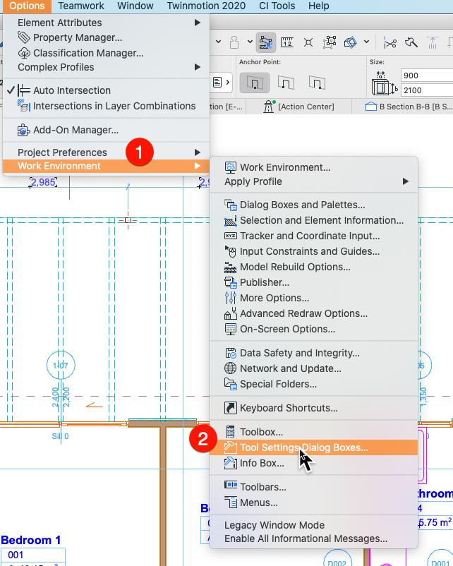
在工作环境窗口中，选中左栏的 Tool Settings Dialog Boxes，中栏选择 Door Tool，然后在右栏开启 Model。
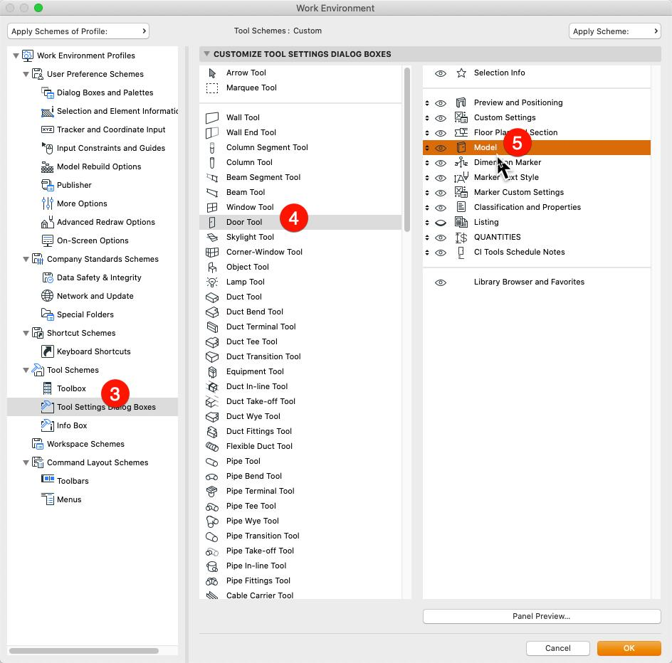
（如有需要对 Window Tool 重复上述操作）
现在在门／窗工具中，你会看到 Model 选项，可用于覆盖门或窗工具的表面
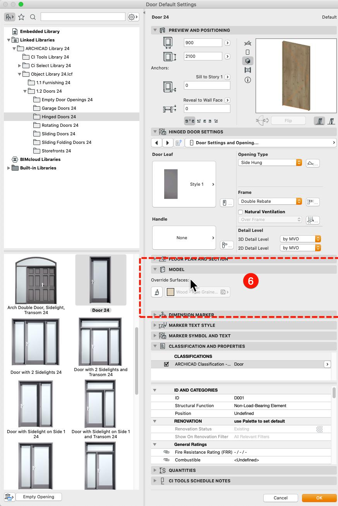
If you have a door or window showing a uniform surface and you've set all the correct attributes you may have the model override on.
Follow the steps below to turn on the Model options in your Door Selection Settings.
In Archicad go to Options > Work Environment > Tool Settings Dialog Boxes
In the Work Environment window select Tool Settings Dialog Boxes on the left Column, Door Tool in the middle column and then turn on Model in the right column
(Repeat for the Window Tool if needed
In the Door / Window tool you will now see the Model options to override surfaces for the Door or window tool
英文原文对照Official English Original
If you have a door or window showing a uniform surface and you've set all the correct attributes you may have the model override on.
Follow the steps below to turn on the Model options in your Door Selection Settings.
In Archicad go to Options > Work Environment > Tool Settings Dialog Boxes
In the Work Environment window select Tool Settings Dialog Boxes on the left Column, Door Tool in the middle column and then turn on Model in the right column
(Repeat for the Window Tool if needed
In the Door / Window tool you will now see the Model options to override surfaces for the Door or window tool
如何使用 Ci Tools Doors+Windows 附加插件创建折叠门（Bi-fold Door）
How to Create a Bifold Door using the Ci Tools Doors+Windows add-on
在这段视频中，Natalie 向我们展示如何创建对称的折叠门（Bi-Fold Door）。
In this video, Natalie shows us how to create a symmetrical Bi-Fold Door.
英文原文对照Official English Original
In this video, Natalie shows us how to create a symmetrical Bi-Fold Door.
如何创建自定义门扇
How to Create a Custom Door Leaf
Cadimage Doors+Windows 工具内置了多种门面板样式。不过，如果你想设计更有趣一些的方案，可以创建自定义门扇（Custom Door Leaf）。
首先，使用楼板（slab）在平面视图中绘制门扇。记得设置笔、材质和剖面属性，使其在转换为门扇后按你期望的方式呈现。
选中填充，然后从 File 菜单选择 Libraries and Objects > Save Custom Component（保存自定义构件）。
随后会弹出一个对话框，列出所有可创建的构件类型。选择 Cusom Door Leaf（自定义门扇）。在下一个对话框中选择名称，并将构件保存到嵌入式库（Embedded Library）中。
在 Cadimage Door Settings（门设置）对话框中，将 Leaf Type（门扇类型）设为 Custom（自定义）。
从列表中选择新的 Custom Door Leaf（自定义门扇）。
新的门扇将被插入到框料中。
The Cadimage Doors+Windows tool includes a number of inbuilt door panel styles. However, if you want to design something a little more interesting, you can create a Custom Door Leaf.
First, use slabs to draw the door leaf in plan view. Remember to set pens, materials and section attributes as you want them to appear when converted to a door leaf.
Select the fills, and from the Filemenu choose Libraries and Objects > Save Custom Component.
A dialog will come up listing all the component types you can create. Choose Cusom Door Leaf. In the next dialog choose a name and save the component into the Embedded Library.
In the Cadimage Door Settingsdialog, set the Leaf Type to Custom.
Choose the new Custom Door Leaffrom the list.
The new leaf will be inserted into the frame.
英文原文对照Official English Original
The Cadimage Doors+Windows tool includes a number of inbuilt door panel styles. However, if you want to design something a little more interesting, you can create a Custom Door Leaf.
First, use slabs to draw the door leaf in plan view. Remember to set pens, materials and section attributes as you want them to appear when converted to a door leaf.
Select the fills, and from the Filemenu choose Libraries and Objects > Save Custom Component.
A dialog will come up listing all the component types you can create. Choose Cusom Door Leaf. In the next dialog choose a name and save the component into the Embedded Library.
In the Cadimage Door Settingsdialog, set the Leaf Type to Custom.
Choose the new Custom Door Leaffrom the list.
The new leaf will be inserted into the frame.
如何创建转角推拉门
How to Create a Sliding Corner Door
要创建转角推拉门，我们建议使用 CI Tools Exterior Door（CI 工具外门）。
选中 Door（门）工具，然后选择 CI Tools Library > Ci Tools Door Exterior
按以下设置进行匹配。
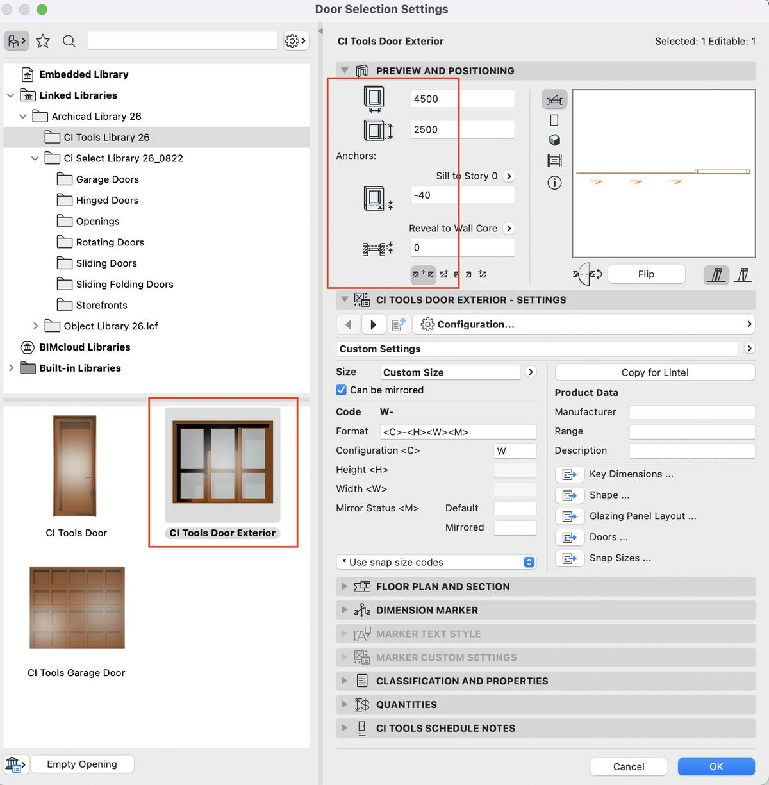
选择 Shape（形状）选项卡 > 将接合方式改为 Glass Joint（玻璃接缝），然后对角度进行斜接。
在 Glazing Panel Layout（玻璃面板布局）下设计门的形状和开启方式
在设置中确定 Frame Shape（框料形状）和 Sill（窗台）类型。将门以 90 度分别放置在两面墙的转角处。
To create a sliding corner door we recommend using the CI Tools Exterior Door.
Select the Door tool then select the CI Tools Library > Ci Tools Door Exterior
Match the following settings.
Select the Shape tag > Change the joint to Glass Joint then mitre the angle.
Design the shape and opening of the door under Glazing Panel Layout
Determine , Frame Shap and Sill types in the settings. Place the door twice to the corner of both walls at 90 degrees.
英文原文对照Official English Original
To create a sliding corner door we recommend using the CI Tools Exterior Door.
Select the Door tool then select the CI Tools Library > Ci Tools Door Exterior
Match the following settings.
Select the Shape tag > Change the joint to Glass Joint then mitre the angle.
Design the shape and opening of the door under Glazing Panel Layout
Determine , Frame Shap and Sill types in the settings. Place the door twice to the corner of both walls at 90 degrees.
如何向门添加把手
How to add Handles to a Door
- 选中一个现有的门，或从工具箱中打开 Door Tool（门工具）以创建一扇新门。
如果要创建新门，请从 Cadimage Library 20 文件夹中选择 Cadimage Door
- 转到 Hardware（五金），为门的外部和内部两侧选择把手和面板类型。
- 你可以在 Placement（布置）下勾选相应的方框，来定义哪些门扇应添加把手。
- 点击 ... 按钮可编辑内部和外部的把手和面板尺寸。
- 这是 Exterior Handles（外部把手）页面。
- 点击 Handle（把手）弹出按钮
- 你可以从 Handle Type drop-down（把手类型下拉菜单）中选择把手：
- 如有需要可修改把手的尺寸
- 点击 Plate Type drop-down（面板类型下拉）按钮选择面板类型：
如有必要可调整尺寸
- 点击 'Handle Location（把手位置）下拉菜单，在 Middle（居中）、Top（顶部）或 Bottom（底部）之间选择：**
Interior Handles（内部把手）选项的工作方式与外部把手完全相同，同样可以选择把手、面板，然后设置位置。
Place Handles on Right-hand Leaves（在右手门扇上放置把手）选项在处理双开门时很重要。默认情况下，每当我们设计 Cadimage Door 时，我们处理的都是左手门扇。在处理双开门时，把手可以只放在左门扇上，或放在左门扇和右门扇上（通过勾选此选项）。
处理多扇门时，你还可以勾选 Handles on Extra Leaves（在附加门扇上设置把手）方框。
我们可以看的最后一个选项是 Kick Plates（踢脚板）。在 Dimensions 中你可以设置踢脚板的高度、与边缘的偏移量以及厚度：
在此页面上，你可以设置 Kick Plates 放置在 Exterior Face（外表面）、Interior Face（内表面） 或两者上：
- 点击 OK 将设置应用到现有门，或放置一扇新门。
- Select an existing door or open the Door Tool from the toolbox to create a new door.
If creating a new door, select the Cadimage Door inside Cadimage Library 20 folder
- Go to Hardwareto select the handle and plate types for Exterior and Interior sides of the door.
- You can define which door Leaves should have handles added to by ticking the appropriate boxes under Placement.
- Click on the ... button to editInterior and ExteriorHandle and Plate dimensions.
- This is the Exterior Handles page.
- Click on the Handle fly-out button
- You can choose a Handle from the Handle Type drop-down:
- Modify the dimensions of the handle if desired
- Click on the Plate Type drop-down button to choose a plate type:
Adjust dimension if necessary
- Click on 'Handle Location' drop-downto choose between Middle, Top or Bottom:
The Interior Handles options work in exactly the same way as Exterior Handles with options to choose the Handle, the Plate and then set the Location.
The option to Place Handles on Right-hand Leaves is important when working with Double Doors. By default, whenever we design a Cadimage Door, we work with the Left-hand leaf. When working with Double Doors, the handles can be placed on only the Left-leaf or Left- and Right-leaf (by ticking this option).
When working with multi-leaf Doors, you also have the option to tick the boxHandles on Extra Leaves.
The final option we can look at is the Kick Plates. In Dimensions you can set the height, offset from edges and thickness of the Plate:
On this page you can set the Kick Plates to be placed on Exterior Face, Interior Face or both:
- Click OK to apply the settings to an existing door or place a anew door.
英文原文对照Official English Original
- Select an existing door or open the Door Tool from the toolbox to create a new door.
If creating a new door, select the Cadimage Door inside Cadimage Library 20 folder
- Go to Hardwareto select the handle and plate types for Exterior and Interior sides of the door.
- You can define which door Leaves should have handles added to by ticking the appropriate boxes under Placement.
- Click on the ... button to editInterior and ExteriorHandle and Plate dimensions.
- This is the Exterior Handles page.
- Click on the Handle fly-out button
- You can choose a Handle from the Handle Type drop-down:
- Modify the dimensions of the handle if desired
- Click on the Plate Type drop-down button to choose a plate type:
Adjust dimension if necessary
- Click on 'Handle Location' drop-downto choose between Middle, Top or Bottom:
The Interior Handles options work in exactly the same way as Exterior Handles with options to choose the Handle, the Plate and then set the Location.
The option to Place Handles on Right-hand Leaves is important when working with Double Doors. By default, whenever we design a Cadimage Door, we work with the Left-hand leaf. When working with Double Doors, the handles can be placed on only the Left-leaf or Left- and Right-leaf (by ticking this option).
When working with multi-leaf Doors, you also have the option to tick the boxHandles on Extra Leaves.
The final option we can look at is the Kick Plates. In Dimensions you can set the height, offset from edges and thickness of the Plate:
On this page you can set the Kick Plates to be placed on Exterior Face, Interior Face or both:
- Click OK to apply the settings to an existing door or place a anew door.
如何向门的外侧添加套线
How to add Trims to the exterior of a Door
要为门的外侧添加套线（trims），请转到设置对话框中的 Exterior Trims（外部套线）区域。
你可以看到以下子菜单项，可在其中修改设计的具体部分：
- Head Moulding（上楣线脚）—— 指横跨洞口顶部的套线
- Jamb Moulding（侧框线脚）—— 指洞口两侧的套线
- Exterior Trim（外部套线）—— 指围绕整个洞口的外侧套线
- Sill（窗台）—— 指横跨洞口底部的套线
应用外部套线
- 选中一个现有的门，或通过点击工具箱中的 Door Tool（门工具）创建一扇新门
- 转到 Exterior Trims.（外部套线）。你可以从此页面更改 Head Moulding、Jamb Moulding、Exterior Trim 和 Sill 类型：
- 点击 ... 转到各个页面。这将让你访问更多设置。
- 在可用的三个选项中，选择 'Surface Mounted - Returned Ends'（表面安装—回折端头）
提示： 记住，你可以随时点击 OK 退出对话框并放置／更新门。
- 点击 OK 关闭对话框
- 在 3D 窗口中查看结果。
下面的示例已更改表面并使用 Cinerender 引擎渲染：
To add trims to the exterior of your door, go to the Exterior Trims area of your Settings dialogue.
You can see the following sub-menu items where you can modify specific parts of your design:
- Head Moulding – refers to the trim across the top of the opening
- Jamb Moulding – refers to the trims to either side of the opening
- Exterior Trim – refers to the external trim around the entire opening
- Sill – refers to the trim across the bottom of the opening
To Apply an exterior Trim
- Select an existing door,or create a new door by clicking on the Door Tool in the Toolbox
- Go to Exterior Trims.You can change the Head Moulding, Jamb Moulding, Exterior Trim and Sill types from this page:****
- Click on ... to navigate to each page. This will give you access to more settings.
- Of the three options available, choose 'Surface Mounted - Returned Ends'
TIP:*Remember, you can click OK to**exit the dialogue and place / update the door at any time.*
- ClickOK to close the dialogue
- View the results in the 3D Window.
The example below has had the surfaces altered and rendered using the Cinerender Engine:
英文原文对照Official English Original
To add trims to the exterior of your door, go to the Exterior Trims area of your Settings dialogue.
You can see the following sub-menu items where you can modify specific parts of your design:
- Head Moulding – refers to the trim across the top of the opening
- Jamb Moulding – refers to the trims to either side of the opening
- Exterior Trim – refers to the external trim around the entire opening
- Sill – refers to the trim across the bottom of the opening
To Apply an exterior Trim
- Select an existing door,or create a new door by clicking on the Door Tool in the Toolbox
- Go to Exterior Trims.You can change the Head Moulding, Jamb Moulding, Exterior Trim and Sill types from this page:****
- Click on ... to navigate to each page. This will give you access to more settings.
- Of the three options available, choose 'Surface Mounted - Returned Ends'
TIP:*Remember, you can click OK to**exit the dialogue and place / update the door at any time.*
- ClickOK to close the dialogue
- View the results in the 3D Window.
The example below has had the surfaces altered and rendered using the Cinerender Engine:
如何向门的内侧添加套线
How to add Trims to the interior of a Door
要为门洞口的内侧添加套线（trims），你需要修改 'Interior Trims'（内侧套线）下的设置。
在下面的练习中，我们将逐步带你编辑这些选项。
- 从工具箱中打开 Door Tool（门工具），选中一个现有门或创建一扇新门。
- 打开门的设置并选择 Interior Trims（内侧套线）
- 从左侧下拉菜单中选择一个套线轮廓（Trim Profile）。
- 每个轮廓都会带来不同的图片和不同的设置：
- Trim Location（套线位置）可从右侧下拉菜单设置：
- 点击 OK 关闭对话框并应用设置。
你可以在下方看到生成的门（已应用表面并使用 CineRender 引擎渲染）：
To add trims to the interior of your door opening, you'll need to modify the settings under 'Interior Trims'.
In the exercise below we step you through editing these options.
- Select an Existing DoororCreate a new Doorby opening the Door Toolfrom the Toolbox.
- Open Door Settings and choose Interior Trims
- Choose an interior Trim Profilefrom the left hand side drop-down menu.
- Each Profile will bring a different image with different settings:
- The Trim Location can be set from the right hand side drop-down:
- Click OK to close the dialogue and apply the settings.
You can see the resulting door below (with surfaces applied and rendered in using the CineRender Engine):
英文原文对照Official English Original
To add trims to the interior of your door opening, you'll need to modify the settings under 'Interior Trims'.
In the exercise below we step you through editing these options.
- Select an Existing DoororCreate a new Doorby opening the Door Toolfrom the Toolbox.
- Open Door Settings and choose Interior Trims
- Choose an interior Trim Profilefrom the left hand side drop-down menu.
- Each Profile will bring a different image with different settings:
- The Trim Location can be set from the right hand side drop-down:
- Click OK to close the dialogue and apply the settings.
You can see the resulting door below (with surfaces applied and rendered in using the CineRender Engine):
如何更改车库门的开启类型
How to change a Garage Door opening type
使用 Cadimage Door+Window 工具制作的车库门有三种可能的开启类型：Roller（卷帘）、Tilt Panel（倾斜面板）和 Sectional Lift（分段提升）。
你可以通过 Shape（形状）设置更改开启类型。
- 选中一个现有车库门（或创建一个新的）
- 转到 Shape：
- 点击 Door Type（门类型）下拉按钮（如下高亮所示），在可用的不同选项之间进行选择：
- 从弹出菜单中选择所需的开启类型
- 选择你需要的选项
- 完成其他所需设置的编辑后，点击 OK 退出对话框
Garage Doors made using the Cadimage Door+Window Tool have three possible opening types: Roller, Tilt Panel and Sectional Lift.
You can change the opening type via the Shape settings.
- Select an existing Garage Door (or create a new one)
- Go to Shape:
- Click the Door Type drop-down button (highlighted below) to choose between the different options available:
- Choose the desired opening type from the flyout
- Choose the option you require
- Once you have finished editing any other require settings, clickOKto exit the dialog
英文原文对照Official English Original
Garage Doors made using the Cadimage Door+Window Tool have three possible opening types: Roller, Tilt Panel and Sectional Lift.
You can change the opening type via the Shape settings.
- Select an existing Garage Door (or create a new one)
- Go to Shape:
- Click the Door Type drop-down button (highlighted below) to choose between the different options available:
- Choose the desired opening type from the flyout
- Choose the option you require
- Once you have finished editing any other require settings, clickOKto exit the dialog
如何更改门或窗的属性
How to change the Attributes of a Door or Window
门和窗的属性（Door and Windows Attributes） 有两种控制方式。你可以在工具的每个页面上更改表面（Surface）和笔（Pen）设置，也可以通过属性页面（Attributes Page）更改。
- 在每个页面上更改门或窗不同构件的表面和笔：
2：从全部属性页面中更改：
Door and Windows Attributes can be controlled in two ways. You can change the Surface and Pen settings on each page of the Tool or via Attributes Page.
- Changing the Surfaces and Pens on each page for different components of a Door or Window:
2: From the all Attributes Page:
英文原文对照Official English Original
Door and Windows Attributes can be controlled in two ways. You can change the Surface and Pen settings on each page of the Tool or via Attributes Page.
- Changing the Surfaces and Pens on each page for different components of a Door or Window:
2: From the all Attributes Page:
如何更改倾斜面板门（Tilt Panel Door）的面板布局
How to change the Panel Layout of a Tilt Panel Door
你可以通过 Door Leaf（门扇）菜单选项，调整使用 Cadimage Door+Window 工具创建的车库门的 'Panel Layouts'（面板布局）。
在下面的示例中，我们将带你完成更改 Tilt（倾斜）面板类型门的面板布局的步骤。
要修改面板布局：
- 选中一个现有车库门或创建一个新的
- 从左侧的选项中选择 Door Leaf（如下所示）：
你可能会注意到 Use a Custom Door Leaf（使用自定义门扇）选项，它保存在已加载的 ARCHICAD 库中。
- 你可以从右侧的 Glazing Panels（玻璃面板）下拉菜单中选择 Glazing Panel Type（玻璃面板类型）：
我们在这里确定玻璃面板的竖向位置和数量。
- 转到 Panel Inserts（面板填充）子菜单：
提示： 还有更多选项可用于控制 Frame（框料）、Glass（玻璃）、Exterior Trims（外部套线） 和 Attributes（属性），其控制方式与常规 Cadimage 门相同。
- 点击 OK 退出对话框
下面展示了车库门的渲染示例：
You can adjust the 'Panel Layouts' for Garage Doors created with the Cadimage Door+Window Tool via the Door Leaf menu option.
In the example below we take you through the steps of changing the Panel Layout of a door with a Tilt panel type.
To modify the Panel Layout:
- Select an existing Garage Door or create a new one
- Choose Door Leaf from the options on the left (shown below):
You may notice the option to Use a Custom Door Leaf, which is saved in the loaded ARCHICAD Libraries.
- You can choose the Glazing Panel Typefrom theGlazing Panelsdrop down on the right hand side:
This is where we determine the vertical position and number of the Glazing Panels.
- Go to the Panel Inserts sub menu:
TIP: Further options to control the Frame, Glass, Exterior TrimsandAttributesare also available and controlled in the same way as with regular Cadimage Doors.
- Click OK to exit the dialogue
A rendered example of the Garage Door is shown below:
英文原文对照Official English Original
You can adjust the 'Panel Layouts' for Garage Doors created with the Cadimage Door+Window Tool via the Door Leaf menu option.
In the example below we take you through the steps of changing the Panel Layout of a door with a Tilt panel type.
To modify the Panel Layout:
- Select an existing Garage Door or create a new one
- Choose Door Leaf from the options on the left (shown below):
You may notice the option to Use a Custom Door Leaf, which is saved in the loaded ARCHICAD Libraries.
- You can choose the Glazing Panel Typefrom theGlazing Panelsdrop down on the right hand side:
This is where we determine the vertical position and number of the Glazing Panels.
- Go to the Panel Inserts sub menu:
TIP: Further options to control the Frame, Glass, Exterior TrimsandAttributesare also available and controlled in the same way as with regular Cadimage Doors.
- Click OK to exit the dialogue
A rendered example of the Garage Door is shown below:
如何更改门的符号视图
How to change the Symbolic view of a door
你可以通过修改以下位置的设置来控制门符号的显示方式：
- Door > Wall Opening（门 > 墙体开口）
- Display Options > Plan View（显示选项 > 平面视图）
- Display Options > Model View（显示选项 > 模型视图）
在下面的练习中，我们将一步步带你了解整个过程。
练习：修改 Door > Wall Opening 设置
- 转到 Door > Wall Opening
- 选择 'Contours in Plan View'（平面图中的轮廓）展开项以查看选项：
- 项目 1：Contours（轮廓）—— 无、内部、外部或两者
- 项目 2：Contour Pen（轮廓笔）
- 项目 3：Contour Line Type（轮廓线型）—— 内部和外部可独立设置
- 在 'Background Fill in Plan View'（平面图中的背景填充）展开项下，可以设置填充类型及其前景笔和背景笔。
练习：修改平面视图设置
- 转到 Display Options > Plan View：
在这里你会找到以下选项：
- Items to Show in Plan View（平面图中显示的项目）—— 使用勾选框设置窗中各构件的可见性
- Symbol Detail（符号细节）—— 选择固定比例符号或按绘图比例设置
- Open Lines（开启线）—— 选择将开启线显示为弧线还是直线，并设置颜色和线型。此外，这也可以在窗设置中单独控制，或使用模型视图选项在项目范围内控制
- Arrow Style for Sliders（滑动件箭头样式）—— 选择箭头样式，然后设置大小和偏移量
- Opening Doors（开启的门）—— 设置门在平面图中的开启角度
- Label Leaf Sizes（门扇尺寸标注）—— 选择标注内容（无、宽、宽 x 高或高 x 宽）
练习：修改模型设置
- 转到 Display Options > Model：
在这里你会找到以下选项：
- Pivot Lines（枢轴线）—— 选择样式并设置是否在 3D 和／或剖面／立面中可见。此外，这也可以在窗设置中单独控制，或使用模型视图选项在项目范围内控制
- Arrow Style for Sliders（滑动件箭头样式）—— 选择箭头样式，然后设置大小和偏移量
- Opening Angles（开启角度）—— 开启角度实际上在 Setout > Glazing（分格 > 玻璃）页面中设置，但在这里你可以选择面板是否在剖面／立面中显示为开启状态
- Animation（动画）—— 设置门在动画中开启和关闭的参数
You can control the way a door symbol is displayed by modifying the settings under:
- Door > Wall Opening
- Display Options > Plan View
- Display Options > Model View
In the following exercise we show take you through the process step-by-step.
Exercise: Modify Door > Wall Opening Settings
- Go to Door > Wall Opening
- Choose the 'Contours in Plan View' twirl down to view options:
- Item 1: Contours – none, inside, outside or both
- Item 2: Contour Pen
- Item 3: Contour Line Type – inside and outside independently
- Under the 'Background Fill in Plan View' twirl-down, you can set the Fill Type and its Foreground and Background pens.
Exercise: Modify Plan View Settings
- Go to Display Options > Plan View:
Here you will find options for:
- Items to Show in Plan View – sets the visibility of components in the Window using tick boxes
- Symbol Detail – choose to have a fixed scale symbol or set by drawing scale
- Open Lines – choose to display opening lines as arcs or lines as well as set the colour and linetype. In addition, this can be controlled individually in the window settings or across the project using Model View Options
- Arrow Style for Sliders – choose a style of arrow and then set the size and offsets
- Opening Doors – set the opening angle of the door on plan
- Label Leaf Sizes – choose what to label (none, Width, Width x Height or Height x Width)
Exercise: Modify Model Settings
- Go to Display Options > Model:
Here you will find options for:
- Pivot Lines – choose the style and set if visible in 3D and / or Section / Elevation. In addition, this can be controlled individually in the window settings or across the project using Model View Options
- Arrow Style for Sliders – choose a style of arrow and then set the size and offsets
- Opening Angles – the opening angles are actually set in the Setout> Glazing page, but here you can choose if the panels are shown open in Section / Elevation
- Animation – set the parameters for Doors opening and closing in animations
英文原文对照Official English Original
You can control the way a door symbol is displayed by modifying the settings under:
- Door > Wall Opening
- Display Options > Plan View
- Display Options > Model View
In the following exercise we show take you through the process step-by-step.
Exercise: Modify Door > Wall Opening Settings
- Go to Door > Wall Opening
- Choose the 'Contours in Plan View' twirl down to view options:
- Item 1: Contours – none, inside, outside or both
- Item 2: Contour Pen
- Item 3: Contour Line Type – inside and outside independently
- Under the 'Background Fill in Plan View' twirl-down, you can set the Fill Type and its Foreground and Background pens.
Exercise: Modify Plan View Settings
- Go to Display Options > Plan View:
Here you will find options for:
- Items to Show in Plan View – sets the visibility of components in the Window using tick boxes
- Symbol Detail – choose to have a fixed scale symbol or set by drawing scale
- Open Lines – choose to display opening lines as arcs or lines as well as set the colour and linetype. In addition, this can be controlled individually in the window settings or across the project using Model View Options
- Arrow Style for Sliders – choose a style of arrow and then set the size and offsets
- Opening Doors – set the opening angle of the door on plan
- Label Leaf Sizes – choose what to label (none, Width, Width x Height or Height x Width)
Exercise: Modify Model Settings
- Go to Display Options > Model:
Here you will find options for:
- Pivot Lines – choose the style and set if visible in 3D and / or Section / Elevation. In addition, this can be controlled individually in the window settings or across the project using Model View Options
- Arrow Style for Sliders – choose a style of arrow and then set the size and offsets
- Opening Angles – the opening angles are actually set in the Setout> Glazing page, but here you can choose if the panels are shown open in Section / Elevation
- Animation – set the parameters for Doors opening and closing in animations
如何创建带独立面板的 2x 双悬窗
How to create a 2x double hung window with independent panels
如果你正在创建一个新窗（而不是编辑已放置好的窗）：
- 从工具箱中打开 Window Tool（窗工具），然后
- 转到 Glazing Panels（玻璃面板）页面，选中该页面左侧的窗并点击 + 按钮添加一根中梃：

- 选中其中一个面板，将 Panel Type（面板类型）选择为 Double Hung（双悬），然后对另一个面板执行相同操作：
- 你可以确定两个面板中哪一个是固定的、哪一个是滑动的。
- 你可以选择 Split Ratio（分隔比例），确定你希望下悬部分占窗总高度的百分比。
另一种方法：创建带相同面板的 2x 双悬窗
创建这种配对双悬单元窗的另一种方式是保持面板为一个（不要使用 + 按钮），然后只需使用下面高亮显示的选项将竖向面板数量设置为 2：
两种方法都会得到外观类似下图所示的窗。但采用第一种方法，如果你希望单独自定义窗内的各个单元，你将拥有更大的控制权。
If you are creating a new window (rather than editing one already in place):
- Open the Window Tool from the toolbox and
- Navigate to the Glazing Panels page, select the Window on the left hand side of this page and click on the + button to add a mullion:
- Select one of the panels and choose the Panel Type to be Double Hung, then do the same to the other panel:
- You can determine which of the two panels is fixed or slides.
- You can choose the Split Ratio to determine what percentage of the overall hight of the window you would like the bottom hung part to take.
Alternate method: To create a 2x Double Hung window with identical panels
An alternative way to create this style of window with matching Double Hung units is to leave the panel as one (do not use the + button) and then simply set number of vertical panels to 2 using the option highlighted below:
Both methods will result in a window that looks like the image below. However by following the first method, you will have greater control if you wish to customise the units within the window individually.
英文原文对照Official English Original
If you are creating a new window (rather than editing one already in place):
- Open the Window Tool from the toolbox and
- Navigate to the Glazing Panels page, select the Window on the left hand side of this page and click on the + button to add a mullion:
- Select one of the panels and choose the Panel Type to be Double Hung, then do the same to the other panel:
- You can determine which of the two panels is fixed or slides.
- You can choose the Split Ratio to determine what percentage of the overall hight of the window you would like the bottom hung part to take.
Alternate method: To create a 2x Double Hung window with identical panels
An alternative way to create this style of window with matching Double Hung units is to leave the panel as one (do not use the + button) and then simply set number of vertical panels to 2 using the option highlighted below:
Both methods will result in a window that looks like the image below. However by following the first method, you will have greater control if you wish to customise the units within the window individually.
如何创建车库门
How to create a Garage Door
车库门的工作流程与常规 Cadimage 门和窗略有不同。由于车库门的复杂性，我们通常在 Detailed Design（详细设计）模式下工作，而不是 Sketch（草图）。因此，当你首次点击 Cadimage Garage Door 时，会自动呈现 Detailed Design 选项。
在本练习中，我们将展示如何创建一个简单的卷帘门（Roller Door）。为此：
- 在 Toolbox（工具箱）中双击 Door Tool（门工具）
- 转到 Linked Libraries > Cadimage Library 20，选择 Cadimage Garage Door：
**
**
- 转到 Preview and Positioning（预览与定位）面板，修改门的大小和位置
- 设置以下参数：
- Width（宽度）：3000
- Height（高度）：2400
- Sill height（窗台高度）：0
提示：窗的 Anchor reference（锚点参照）和 Reveal（门窗侧壁）也可在此面板中控制。
- 转到下图所示的 Shape（形状）选项：

- 点击上面高亮显示的下拉按钮
- 选择 'Roller'（卷帘）类型：
提示：你会看到在此对话框中还可以控制 Roll Height above Door Head（门楣以上卷起高度）和 Roll Diameter（卷筒直径）。
- 点击 OK 退出对话框
- 点击将车库门放置到墙体中。
插入门后，你应该在平面视图中看到如下内容：
Garage Doors have a slightly different workflow to regular Cadimage Doors and Windows. Due to the complexity of Garage Doors, we normally work in Detailed Design mode rather than Sketch. As such, when you first click on a Cadimage Garage Door, you will automatically be presented with the Detailed Design options.
In this exercise we show you how to create a simple Roller Door. To do this:
- Double click on the Door Tool in the Toolbox
- Navigate to Linked Libraries> Cadimage Library 20and chooseCadimage Garage Door:
**
**
- Go to the Preview and Positioningpanel to modify the size and position of the door
- Set the following parameters:
- Width: 3000
- Height: 2400
- Sill height: 0
TIP: The Anchor reference and Reveal of the window can also be controlled in this panel.
- Go to the Shapeoption shown below:
- Click the drop-down button highlighted above
- Choose the 'Roller' type:
TIP: You will see that you can also control the Roll Height above Door Head and the Roll Diameter from this dialogue box.
- ClickOK to exit the dialogue
- Click to place the Garage Door in a Wall.
Once you insert the Door you should see the following in Plan View:
英文原文对照Official English Original
Garage Doors have a slightly different workflow to regular Cadimage Doors and Windows. Due to the complexity of Garage Doors, we normally work in Detailed Design mode rather than Sketch. As such, when you first click on a Cadimage Garage Door, you will automatically be presented with the Detailed Design options.
In this exercise we show you how to create a simple Roller Door. To do this:
- Double click on the Door Tool in the Toolbox
- Navigate to Linked Libraries> Cadimage Library 20and chooseCadimage Garage Door:
**
**
- Go to the Preview and Positioningpanel to modify the size and position of the door
- Set the following parameters:
- Width: 3000
- Height: 2400
- Sill height: 0
TIP: The Anchor reference and Reveal of the window can also be controlled in this panel.
- Go to the Shapeoption shown below:
- Click the drop-down button highlighted above
- Choose the 'Roller' type:
TIP: You will see that you can also control the Roll Height above Door Head and the Roll Diameter from this dialogue box.
- ClickOK to exit the dialogue
- Click to place the Garage Door in a Wall.
Once you insert the Door you should see the following in Plan View:
如何创建带两块面板的窗
How to create a Window with two panels
- 在 Toolbox（工具箱）中双击 Window Tool（窗工具）
- 从 Linked Libraries > Cadimage Library 20 中选择 Cadimage Window：
- 转到 Glazing Panels（玻璃面板），选中该窗并点击 +
**
**
- 你可以通过选中面板并在 Panel Width（面板宽度）下输入尺寸来设置每个面板的宽度。
- 选中面板后，你可以通过点击左侧下拉菜单更改面板类型。
- 点击 OK 退出对话框
提示：
- 要按设置中的方式放置窗：如同从室外观察窗时那样，点击窗中轴线的左侧。
- 对于镜像窗：点击中轴线的右侧。
插入窗后，你现在应该能在平面视图中看到它：
你的 3D 窗口将呈现类似这样的效果：
- Double click on the Window Tool in the Toolbox
- Choose the Cadimage Windowfrom Linked Libraries> Cadimage Library 20:
- Go to the Glazing Panels,select the Window and click on+
**
**
- You can set each panel side width by selecting the panel and typing the dimension under Panel Width.
- You can change the panel type by clicking on the left hand side drop down with a panel selected.
- ClickOK to exit the dialog
TIP:
- To place the Window as in the settings: Click to the left of the centreline of the window when as if looking at the window from the outside.
- For a mirrored window: Click to the right of the centreline.
Once you have inserted the window, you should now see it in your Plan View:
Your 3D window will look something like this:
英文原文对照Official English Original
- Double click on the Window Tool in the Toolbox
- Choose the Cadimage Windowfrom Linked Libraries> Cadimage Library 20:
- Go to the Glazing Panels,select the Window and click on+
**
**
- You can set each panel side width by selecting the panel and typing the dimension under Panel Width.
- You can change the panel type by clicking on the left hand side drop down with a panel selected.
- ClickOK to exit the dialog
TIP:
- To place the Window as in the settings: Click to the left of the centreline of the window when as if looking at the window from the outside.
- For a mirrored window: Click to the right of the centreline.
Once you have inserted the window, you should now see it in your Plan View:
Your 3D window will look something like this:
如何自定义窗框料设置
How to customise Window Frame settings
- 选中一个现有的窗并打开设置，或从工具箱中打开 Window Tool（窗工具）。
- 转到 Frame（框料）：
该对话框此页面中可用的选项为：
- Main Frame（主框料）—— 修改主框料的宽度和深度
- Sill Frame Profile（窗台框料轮廓）—— 为窗添加窗台轮廓
- Inner Frame（内框料）—— 修改内框料的宽度和深度
- Main and Inner Frame Attributes（主框料与内框料属性）—— 更改表面和笔
- 点击 ... 按钮可访问主框料或内框料的更多设置：
提示： 如果你已调整了内框料的设置，可以单独为其设置与主框料不同的表面。
- 点击 OK 应用设置。
- Select an existing window and open the Settings or open the Window Tool from the toolbox.
- Navigate to Frame:
The options available in this page of the dialogue are:
- Main Frame –modify the main frame width and depth
- Sill Frame Profile – add a sill profile to the window
- Inner Frame – modify the inner frame width and depth
- Main and Inner Frame Attributes - Change the surfaces and pens
- Click on the ... button to access more settings for either Main Frame or Inner Frame:
TIP: If you have adjusted the setting for the Inner Frame, you can set the surfaces independently to the Main Frame.
- Click OK to apply the settings.
英文原文对照Official English Original
- Select an existing window and open the Settings or open the Window Tool from the toolbox.
- Navigate to Frame:
The options available in this page of the dialogue are:
- Main Frame –modify the main frame width and depth
- Sill Frame Profile – add a sill profile to the window
- Inner Frame – modify the inner frame width and depth
- Main and Inner Frame Attributes - Change the surfaces and pens
- Click on the ... button to access more settings for either Main Frame or Inner Frame:
TIP: If you have adjusted the setting for the Inner Frame, you can set the surfaces independently to the Main Frame.
- Click OK to apply the settings.
如何在 Ci Tools 明细表注释中包含自动文本
How to include Autotexts in the Ci Tools Schedule Notes
创建 Ci Tools 门／窗明细表时，你可以在明细表中每个立面图下方附加注释。这些注释可能包含门或窗所用玻璃类型、框料、门窗侧壁、五金等方面的信息。
你也可以包含自动文本（autotext）以显示来自模型的数据。只需将自动文本作为明细表注释的一部分，并将其附加到明细表中的立面门／窗上即可。
例如，如果你想显示透明玻璃面积，请在明细表注释中包含关键字
可用的自动文本
环境（Environment）
| **自动文本** | **将被替换为** |
|---|---|
| 相对于项目北向的方向 | |
| 与该门／窗关联的房间（区域）编号 | |
| 与该门／窗关联的房间（区域）名称 |
###
计算面积（Calculated Areas）
| **自动文本** | **将被替换为** |
|---|---|
| 传热系数 U 值 | |
| 传热系数 UA 值 | |
| 总面积（含框料和面板） | |
| 采光面积（即透光玻璃的面积——不一定是透明玻璃） | |
| 透明玻璃面积 | |
| 可开启面积 |
列项参数（Parameters for Listing）
| **自动文本** | **将被替换为** |
|---|---|
| 通用 - 操作类型 | |
| 通用 - 门扇宽度 | |
| 通用 - 玻璃 | |
| 通用 - 饰面 | |
| 通用 - 注释/备注 | |
| 来源 - 制造商 | |
| 来源 - 单价 | |
| 位置 - 位置 | |
| 位置 - 立面 | |
| 位置 - 房间编号 | |
| 位置 - 房间名称 | |
| 配件 - 五金组 | |
| 配件 - 锁具 | |
| 配件 - 铰链 | |
| 配件 - 附件 | |
| 细部 - 上楣细部 | |
| 细部 - 门窗套细部 | |
| 细部 - 窗台细部 | |
| 性能 - 耐火等级 | |
| 性能 - 隔声等级 | |
| 性能 - 传热 | |
| 性能 - 玻璃总面积 | |
| 性能 - 玻璃总周长 |
尺寸（Dimensions）
门／窗的一些基本尺寸可作为自动文本使用。
| **自动文本** | **将被替换为** |
|---|---|
| 单元宽度 | |
| 单元高度 | |
| 墙体洞口宽度 | |
| 墙体洞口高度 | |
| 门窗侧壁宽度 | |
| 门窗侧壁高度 | |
| 疏散宽度 | |
| 疏散高度 | |
| 所在墙体的厚度 | |
| 窗台高度 | |
| 框料宽度 | |
| 框料深度 |
表面（Surfaces）
模型中使用的表面可通过自动文本列出。
| **自动文本** | **将被替换为** |
|---|---|
| 门／窗框料构件使用的所有表面。 | |
| 门窗套内衬（室内侧壁）的表面。 | |
| 外部套线和内部套线（门套线）的表面。 | |
| 外部套线的表面。 | |
| 内部套线的表面。 |
When you create a Ci Tools door/window schedule, you can attach notes below each elevation on the schedule. These notes might include information about the type of glazing, frame, reveal, hardware, etc. used on the door or window.
You can also include autotexts to display data from the model. Just include the autotext as part of a schedule note, and attach that note to the elevated door/window in the schedule.
For example, if you want to display the clear glazed area, include the keyword
Available Autotexts
Environment
| **Autotext** | **Is Replaced With** |
|---|---|
| Direction relative to project North | |
| The number of the zone associated with the door/window | |
| The name of the zone associated with the door/window |
###
Calculated Areas
| **Autotext** | **Is Replaced With** |
|---|---|
| Thermal U value | |
| Thermal UA value | |
| Total area (including frame and panels) | |
| Daylight area (i.e. the area of glazing that transmits light - not necessarily clear glazing) | |
| Clear glazed area | |
| Vented area |
Parameters for Listing
| **Autotext** | **Is Replaced With** |
|---|---|
| General - Operation type | |
| General - Leaf widths | |
| General - Glazing | |
| General - Finish | |
| General - Note/remarks | |
| Source - Manufacturer | |
| Source - Unit cost | |
| Location - Location | |
| Location - Elevation | |
| Location - Zone number | |
| Location - Zone name | |
| Fittings - Hardware set | |
| Fittings - Lockset | |
| Fittings - Hinges | |
| Fittings - Accessories | |
| Details - Header detail | |
| Details - Jamb detail | |
| Details - Sill detail | |
| Performance - Fire rating | |
| Performance - Acoustic rating | |
| Performance - Heat transfer | |
| Performance - Total glass area | |
| Performance - Total glas perimeter |
Dimensions
Some basic dimensions of the door/window are available as autotexts.
| **Autotext** | **Is Replaced With** |
|---|---|
| Unit width | |
| Unit height | |
| Wall hole width | |
| Wall hole height | |
| Reveal width | |
| Reveal height | |
| Egress width | |
| Egress height | |
| Thickness of the containing wall | |
| Sill height | |
| Frame width | |
| Frame depth |
Surfaces
Surfaces used in the model may be listed using autotexts.
| **Autotext** | **Is Replaced With** |
|---|---|
| All surfaces used by frame elements of the door/window. | |
| The surface of the jamb liner (interior reveal). | |
| The surfaces of the exterior trim and the interior trim (architrave). | |
| The surface of the exterior trim. | |
| The surface of the interior trim. |
英文原文对照Official English Original
When you create a Ci Tools door/window schedule, you can attach notes below each elevation on the schedule. These notes might include information about the type of glazing, frame, reveal, hardware, etc. used on the door or window.
You can also include autotexts to display data from the model. Just include the autotext as part of a schedule note, and attach that note to the elevated door/window in the schedule.
For example, if you want to display the clear glazed area, include the keyword
Available Autotexts
Environment
| **Autotext** | **Is Replaced With** |
|---|---|
| Direction relative to project North | |
| The number of the zone associated with the door/window | |
| The name of the zone associated with the door/window |
###
Calculated Areas
| **Autotext** | **Is Replaced With** |
|---|---|
| Thermal U value | |
| Thermal UA value | |
| Total area (including frame and panels) | |
| Daylight area (i.e. the area of glazing that transmits light - not necessarily clear glazing) | |
| Clear glazed area | |
| Vented area |
Parameters for Listing
| **Autotext** | **Is Replaced With** |
|---|---|
| General - Operation type | |
| General - Leaf widths | |
| General - Glazing | |
| General - Finish | |
| General - Note/remarks | |
| Source - Manufacturer | |
| Source - Unit cost | |
| Location - Location | |
| Location - Elevation | |
| Location - Zone number | |
| Location - Zone name | |
| Fittings - Hardware set | |
| Fittings - Lockset | |
| Fittings - Hinges | |
| Fittings - Accessories | |
| Details - Header detail | |
| Details - Jamb detail | |
| Details - Sill detail | |
| Performance - Fire rating | |
| Performance - Acoustic rating | |
| Performance - Heat transfer | |
| Performance - Total glass area | |
| Performance - Total glas perimeter |
Dimensions
Some basic dimensions of the door/window are available as autotexts.
| **Autotext** | **Is Replaced With** |
|---|---|
| Unit width | |
| Unit height | |
| Wall hole width | |
| Wall hole height | |
| Reveal width | |
| Reveal height | |
| Egress width | |
| Egress height | |
| Thickness of the containing wall | |
| Sill height | |
| Frame width | |
| Frame depth |
Surfaces
Surfaces used in the model may be listed using autotexts.
| **Autotext** | **Is Replaced With** |
|---|---|
| All surfaces used by frame elements of the door/window. | |
| The surface of the jamb liner (interior reveal). | |
| The surfaces of the exterior trim and the interior trim (architrave). | |
| The surface of the exterior trim. | |
| The surface of the interior trim. |
如何制作枢轴门（Pivot Door）
How to make a Pivot Door
在 ARCHICAD 20 及更高版本中，请打开门的设置对话框，转到 'Door Leaf'（门扇）页面，更改 'A' 以设置枢轴点距墙体的距离。
In ARCHICAD 20 & onwards, please open the Door Settings dialog box and navigate to the 'Door Leaf' page and change 'A' to set the pivoting point distance from the wall.
英文原文对照Official English Original
In ARCHICAD 20 & onwards, please open the Door Settings dialog box and navigate to the 'Door Leaf' page and change 'A' to set the pivoting point distance from the wall.
如何建模转角门／窗
How to model a Corner Door/ Window
- 在 Toolbox（工具箱）中双击 Door tool（门工具），然后从 Linked Libraries > Ci Tools Library 中选择 Exterior Door（外门）
- 按以下步骤配置门，并在每面墙中各放置一扇
- 在平面图中移动墙体上的门，使其在转角处相接。
- Double-click on the Door tool in the Toolbox, then from Linked Libraries > Ci Tools Librarychoose the Exterior Door
- Configure the door following the steps below and place one in each of the walls
- Move the doors in the wall on floor plan so they meet in the corner.
英文原文对照Official English Original
- Double-click on the Door tool in the Toolbox, then from Linked Libraries > Ci Tools Librarychoose the Exterior Door
- Configure the door following the steps below and place one in each of the walls
- Move the doors in the wall on floor plan so they meet in the corner.
如何建模推拉暗藏门（Pocket Slider Door）
How to model a Pocket Slider Door
- 在 Toolbox（工具箱）中双击 Door（门）工具，然后从 Linked Libraries > Cadimage Library 20 中选择 Cadimage Door

- 点击主下拉菜单并选择 Door Type...（门类型）
- 进入 Door Type 页面后，点击主下拉菜单并选择 Pocket Slider（暗藏推拉门）：
- 调整设置以满足你的需求
- 点击 OK，然后放置门。
- Double-click on the Door tool in the Toolbox, then from Linked Libraries > Cadimage Library 20 choose the Cadimage Door
- Click on the main drop-down and select Door Type...
- Once in the Door Type page, chick on the main drop dow and choose Pocket Slider:
- Adjust the settings to suit your requirements
- Click OK, then place the door.
英文原文对照Official English Original
- Double-click on the Door tool in the Toolbox, then from Linked Libraries > Cadimage Library 20 choose the Cadimage Door
- Click on the main drop-down and select Door Type...
- Once in the Door Type page, chick on the main drop dow and choose Pocket Slider:
- Adjust the settings to suit your requirements
- Click OK, then place the door.
如何修改窗上的玻璃尺寸
How to modify the Glass Dimensions on Windows
要将单元从单层玻璃转换为双层玻璃：
- 转到 Glass（玻璃）：
**
**
- 点击右侧下拉菜单并将其更改为 Double Glazing（双层玻璃）：
**
**
在 3D 中查看窗时，你可能会注意到有一个 Interior Reveal（内侧门窗侧壁），其表面很可能与 Main Frame（主框料）不同。
要更改 Interior Reveal 的颜色：
- 转到 Interior Trims（内侧套线）：
To convert the unit from single-glazed to double-glazed:
- Go to the Glass:
**
**
- Click on the right handside drop-down and change it toDouble Glazing:
**
**
When you view your window in 3D, you may notice that there is an Interior Reveal that is likely to have different surfaces to the Main Frame.
To change the colour of the Interior Reveal:
- Go to Interior Trims:
英文原文对照Official English Original
To convert the unit from single-glazed to double-glazed:
- Go to the Glass:
**
**
- Click on the right handside drop-down and change it toDouble Glazing:
**
**
When you view your window in 3D, you may notice that there is an Interior Reveal that is likely to have different surfaces to the Main Frame.
To change the colour of the Interior Reveal:
- Go to Interior Trims:
如何修改门的顶部形状
How to modify the Head Shape of a Door
你可以通过主下拉菜单中的 Shape（形状）更改 Cadimage Door 顶部（或"门楣"，head）的设计。
共有 10 种不同设计可供选择，每种都有一系列可自定义参数：
要更改门的 Head Shape（顶部形状）：
- 选中一个现有的门，或从工具箱中打开 Door Tool（门工具）
- 点击主下拉菜单转到 Shape：
- 从 Head Shape（顶部形状）下拉菜单中选择一个选项：
提示： 只有在你选择了偏好的 Head Shape 后，才能输入尺寸参数。
- 完成选择后，你就可以更改 Shape Dimensions（形状尺寸）：
- 点击 OK 关闭对话框并应用设置。
You can change the design of the top (or 'head') of your Cadimage Door by navigating to Shapeon the main drop-down menu.
There are 10 different designs to choose from, each with a range of customisable parameters:
To change the Head Shape of a door:
- Select an existing door or open theDoor Toolfrom theToolbox
- Go to Shape by clicking on the main drop-down:
- Select a Head Shape option from the Head Shape drop-down:
TIP: Only after you choose your preferred Head Shape will you be able to enter dimension parameters.
- Once you make a selection, you will be able to change the Shape Dimensions:
5.Click OKto close the dialogue and apply the settings.
英文原文对照Official English Original
You can change the design of the top (or 'head') of your Cadimage Door by navigating to Shapeon the main drop-down menu.
There are 10 different designs to choose from, each with a range of customisable parameters:
To change the Head Shape of a door:
- Select an existing door or open theDoor Toolfrom theToolbox
- Go to Shape by clicking on the main drop-down:
- Select a Head Shape option from the Head Shape drop-down:
TIP: Only after you choose your preferred Head Shape will you be able to enter dimension parameters.
- Once you make a selection, you will be able to change the Shape Dimensions:
5.Click OKto close the dialogue and apply the settings.
如何修改窗的形状
How to modify the Shape of a Window
以下是使用 Cadimage Window 工具可以实现的部分窗形状示例：
- 选中一个现有的窗并打开设置，或从工具箱中打开 Window Tool（窗工具）。
- 转到 Shape（形状）页面：
注意：Head Shape（顶部形状）[A] 和 Sill Shape（窗台形状）[B] 可以独立控制。
- 点击 Head（或 Sill）Shape drop-down（形状下拉）按钮，查看可用形状列表：
- 根据你选择的形状，会呈现不同的参数供你修改：
提示：使用对话框顶部的 Preview（预览）and Positioning（与定位）区域可查看设计的形成过程：
- 点击 OK 应用设置或放置窗。
Here are just some examples of window shapes possible with the Cadimage Window Tool:
- Select an existing window and open the Settings or open the Window Tool from the toolbox.
- Navigate to the Shape page:
NOTE: The Head Shape[A] and the Sill Shape [B] can be controlled independently.
- Click on the Head (or Sill)Shape drop-down button to see a list of available shapes:
- Depending on the shape you choose, you will be presented with different parameters to modify it:
TIP: Use the Preview and Positioning area at the top of the dialog to see how the design is developing:
- Click OK to apply the settings or to place a Window.
英文原文对照Official English Original
Here are just some examples of window shapes possible with the Cadimage Window Tool:
- Select an existing window and open the Settings or open the Window Tool from the toolbox.
- Navigate to the Shape page:
NOTE: The Head Shape[A] and the Sill Shape [B] can be controlled independently.
- Click on the Head (or Sill)Shape drop-down button to see a list of available shapes:
- Depending on the shape you choose, you will be presented with different parameters to modify it:
TIP: Use the Preview and Positioning area at the top of the dialog to see how the design is developing:
- Click OK to apply the settings or to place a Window.
如何修改门或窗在 2D 视图中的外观
How to modify the appearance of a Door or Window in 2D views
你可以通过 Floor Plan and Section（平面图与剖面）页面访问外观设置（Appearance settings），更改门及其构件在平面图和剖面视图中的显示方式：
You can change the way a door and it's components appear in Plan and Section views by accessing the Appearance settings via the Floor Plan and Section page:
英文原文对照Official English Original
You can change the way a door and it's components appear in Plan and Section views by accessing the Appearance settings via the Floor Plan and Section page:
如何在 ARCHICAD 20 中使用明细表注释AC20
How to use Schedule Notes in ARCHICAD 20AC20
方法 1
明细表自定义注释（SCHEDULE CUSTOM NOTES）
在这种情况下，如果你只想为木作保留一组简单的注释而无需分类，只需在以下位置打开注释调板：
Cadimage > Doors and windows > Schedule Notes Palette（门与窗 > 明细表注释调板）
这就是该调板。
在平面图中逐一选中门或窗，在 Custom Notes（自定义注释）字段下输入说明。
在这种情况下你需要注意，该选择仅适用于单个构件，因此此方法仅推荐用于单个构件的一般说明。无法将注释应用到多个选定对象，在那种情况下我们会使用方法 2。
添加完注释后，创建门与窗明细表：
Cadimage > Door and windows > Schedule Manager（门与窗 > 明细表管理器）
设置好明细表设置后，确保启用 Additional Notes（附加注释）和 Include Categories（包含分类）选项。
注释将显示如下
注释：
明细表注释在明细表工作表中也可以编辑。如果选中门／窗项，并勾选了 Live Edit（实时编辑）选项，你也可以在此处编辑这些注释。
不过，你必须确保点击 Send the Object Notes to the Model Joinery（将对象注释发送到模型木作）按钮，这样在工作表中修改的注释才会被推送到 BIM 模型中的实际门／窗构件上。这样如果明细表被更新，注释将保持修改后的状态；但如果你在编辑注释后没有点击该按钮，一旦明细表被更新，这些修改就会丢失。
****
方法 2
创建注释数据库
打开 Door and Window Schedule Notes（门与窗明细表注释）调板
点击打开 Schedule Notes Manager（明细表注释管理器）
开始创建你的分类（Categories），在底部字段中输入以命名新分类。
创建新注释并添加说明。
向该分类添加若干注释
创建一个新分类
如果你想把更多注释添加到其他分类，只需点击想要添加新注释的分类，然后点击 New Note（新建注释）按钮。
最终我们得到的注释和分类列表如下：
如果需要把某条注释移动到另一个分类，只需按住并拖放该注释即可。
点击 OK 关闭调板，你也可以创建注释集（Sets）。
如果你知道要为特定木作构件添加特定注释，注释集会非常实用，这样就不必逐条指定注释。
因此，点击 New set（新建集）按钮，输入集的名称，然后从左侧列表中逐条选择注释并点击 Insert（插入）。
完成注释创建后点击 OK
现在你可以开启 Live Edit（实时编辑）按钮，在平面图中选中木作构件并双击要添加的注释，从而添加注释。
你也可以在明细表工作表中向所选对象添加注释。下面的示例中，注释集会显示在列表顶部，你只需双击该集即可将属于该集的所有注释添加到所选对象上。
在这种情况下你会看到双击该集后注释会自动添加到明细表项上，但一定要记得随后点击 Send Notes to Model（将注释发送到模型）按钮。
****
在明细表中编辑注释的显示
如果想编辑明细表中注释文本的显示，必须确保选中明细表左上角的项目。
选中它并打开设置。
现在你可以编辑注释文本和间距。
点击 OK 并更新明细表
这样所有明细表项都应沿用同一项的设置。
如果你有归并（collated）项，还可以更改文本显示以描述这些项。
%%IMG23%%
Method 1
SCHEDULE CUSTOM NOTES
In this case if you want to keep a simple set of notes for joinery without a category, you can just open the Note palette in the location
Cadimage>Doors and windows>Schedule Notes Palette
This is the palette
Select the Doors or Windows in plan, one at a time and type under the Custom Notes field the description.
In this case you have to be aware the selection only applies to one element, so this method is only recommended for general description of individual elements. It’s not possible to apply the note to multiple selections, in that case we would use Method 2.
Once you finish adding your notes to the selection create door and window schedule
Cadimage>Door and windows> Schedule Manager
After setting up your schedule settings, make sure to activate the Additional Notes and Include Categories option.
The notes will appear like this
Notes:
The schedule notes are editable in the Schedule Worksheet as well. If you select the door/window item, and if the Live Edit option is checked, you can edit those notes here as well
However, you have to make sure to click the Send the Object Notes to the Model Joinery button, this way the notes changed in the worksheet will be pushed to the actual door/window element in your BIM model, this way if the schedule is updated, the notes will remain as changed, but if you don’t click the button after editing the notes, if the schedule is updated, the edits will be lost.
****
Method 2
Create a Notes database
Open the Door and Window Schedule Notes palette
Click to open the Schedule Notes Manager
Start creating your Categories, type in the bottom field to give a name to the new Category
Create a new note and add a description.
Add a few notes to the Category
Create a new Category
If you want to add more notes to other categories, just click in the category you want to add the new note and then click the New Note button
So we finish a list of notes and categories like this:
If you have to move a note to another category just click and hold, drag and drop the note
Click OK to close the palette or you can even create Sets.
Sets of notes can be very practical if you know you will be adding specific notes to specific joinery elements, so you don’t have to assign one note at a time.
So click the New set button, enter the name of the set and select one note at a time from the list of the left side and click Insert.
Once you finished creating your notes click OK
Now you can add your notes in plan by having the Live Edit button, selecting the joinery item and double click the note you want to add.
You can also add the notes to the selection in the schedule worksheet, the example below, the Notes Sets will show at the top of the list and you just have to double click the Set to add all the notes that belong to the set to the selection.
In this case you see the notes are added to the schedule item automatically when you double click the Set but it’s important to remember to click after that the Send Notes to Model button
****
Editing the display of notes in Schedule
If you want to edit the notes display of text in the schedule you have to make sure to select the item at the top left corner of the schedule
Select it and open the settings.
Now you can edit the notes text and distance.
Click OK and update the Schedule
Then all the schedule items should follow the same settings from the same item.
If you have collated items you can change the display of text to describe those items.
%%IMG23%%
英文原文对照Official English Original
Method 1
SCHEDULE CUSTOM NOTES
In this case if you want to keep a simple set of notes for joinery without a category, you can just open the Note palette in the location
Cadimage>Doors and windows>Schedule Notes Palette
This is the palette
Select the Doors or Windows in plan, one at a time and type under the Custom Notes field the description.
In this case you have to be aware the selection only applies to one element, so this method is only recommended for general description of individual elements. It’s not possible to apply the note to multiple selections, in that case we would use Method 2.
Once you finish adding your notes to the selection create door and window schedule
Cadimage>Door and windows> Schedule Manager
After setting up your schedule settings, make sure to activate the Additional Notes and Include Categories option.
The notes will appear like this
Notes:
The schedule notes are editable in the Schedule Worksheet as well. If you select the door/window item, and if the Live Edit option is checked, you can edit those notes here as well
However, you have to make sure to click the Send the Object Notes to the Model Joinery button, this way the notes changed in the worksheet will be pushed to the actual door/window element in your BIM model, this way if the schedule is updated, the notes will remain as changed, but if you don’t click the button after editing the notes, if the schedule is updated, the edits will be lost.
****
Method 2
Create a Notes database
Open the Door and Window Schedule Notes palette
Click to open the Schedule Notes Manager
Start creating your Categories, type in the bottom field to give a name to the new Category
Create a new note and add a description.
Add a few notes to the Category
Create a new Category
If you want to add more notes to other categories, just click in the category you want to add the new note and then click the New Note button
So we finish a list of notes and categories like this:
If you have to move a note to another category just click and hold, drag and drop the note
Click OK to close the palette or you can even create Sets.
Sets of notes can be very practical if you know you will be adding specific notes to specific joinery elements, so you don’t have to assign one note at a time.
So click the New set button, enter the name of the set and select one note at a time from the list of the left side and click Insert.
Once you finished creating your notes click OK
Now you can add your notes in plan by having the Live Edit button, selecting the joinery item and double click the note you want to add.
You can also add the notes to the selection in the schedule worksheet, the example below, the Notes Sets will show at the top of the list and you just have to double click the Set to add all the notes that belong to the set to the selection.
In this case you see the notes are added to the schedule item automatically when you double click the Set but it’s important to remember to click after that the Send Notes to Model button
****
Editing the display of notes in Schedule
If you want to edit the notes display of text in the schedule you have to make sure to select the item at the top left corner of the schedule
Select it and open the settings.
Now you can edit the notes text and distance.
Click OK and update the Schedule
Then all the schedule items should follow the same settings from the same item.
If you have collated items you can change the display of text to describe those items.
%%IMG23%%
迁移到 ARCHICAD 19AC19
Migrating to ARCHICAD 19AC19
打开 ARCHICAD 18（或更早版本）的项目时，我们建议你在更新任何明细表之前先导入旧版预设（Legacy Presets）。以下是完成迁移流程的步骤：
- 使用你的"旧"版本 ARCHICAD 打开项目
- 导出你的预设
- 备份一份项目副本
- 在 ARCHICAD 19 中打开备份的项目副本
- 打开明细表注释对话框（Cadimage > Doors and Windows > Schedule Notes）
- 点击 Import（导入）按钮
- 在文件类型列表中选择 'Legacy Preset File'（旧版预设文件）
- 找到你从"旧"版本 ARCHICAD 中导出的预设
- 点击 Open（打开）：
- 回到 Doors+Windows 明细表注释对话框，你可以：
- 新建（Add a New note）
- 删除所选注释
- 导入和导出注释，以便在项目之间共享注释
- 通过更改其分类或内容来编辑所选注释
你会看到一个对话框，提示导入是否成功：
When you open an ARCHICAD 18 (or earlier) project, we recommend you import your legacy Presets before updating any schedules. Here’s how to complete the migration process:
- Open the project in your ‘old’ version of ARCHICAD
- Export your presets
- Make a back-up copy of your project
- Open the backed-up copy of your project in ARCHICAD 19
- Open the Schedule Notes dialogue (Cadimage > Doors and Windows > Schedule Notes)
- Click the Import button
- Select ‘ Legacy Preset File’ from the file type list
- Locate the presets you exported from your ‘old’ version of ARCHICAD
- Click Open :
- Back in the Doors+Windows Schedule Notes dialogue, you can:
Add a New note
- Delete a selected note
- Import and Export notes so as to share notes between projects
- Edit a selected note by changing its Category or Content
You will see a dialogue letting you know if your import was successful:
英文原文对照Official English Original
When you open an ARCHICAD 18 (or earlier) project, we recommend you import your legacy Presets before updating any schedules. Here’s how to complete the migration process:
- Open the project in your ‘old’ version of ARCHICAD
- Export your presets
- Make a back-up copy of your project
- Open the backed-up copy of your project in ARCHICAD 19
- Open the Schedule Notes dialogue (Cadimage > Doors and Windows > Schedule Notes)
- Click the Import button
- Select ‘ Legacy Preset File’ from the file type list
- Locate the presets you exported from your ‘old’ version of ARCHICAD
- Click Open :
- Back in the Doors+Windows Schedule Notes dialogue, you can:
Add a New note
- Delete a selected note
- Import and Export notes so as to share notes between projects
- Edit a selected note by changing its Category or Content
You will see a dialogue letting you know if your import was successful:
Ci Tools 门或窗中缺少面板
Missing Panels in Ci Tools Door or Window
问题描述
使用 CI Tools Door and Window（门与窗）工具创建的窗中缺少面板。
复现步骤
在窗中，选中一个面板，应用固定玻璃（fixed pane），然后设置自定义窗扇（custom window sash），但在该字段中误输入或输入了 "0" 之类的数值。
然后将面板类型更改为其他设置。
DEF- XXXX
工作流程错误。
变通办法
清除 Custom Window Sash（自定义窗扇）字段中的自定义数值。
完整步骤请观看下方视频
Issue Description
Panels are missing in a window created using the CI Tools Door and Window tool.
Steps to reproduce
In a window, select a panel, apply a fixed pane then set a custom window sash but mis type or enter a value like "0" into the field.
Then change the panel type to another setting.
DEF- XXXX
Workflow Error.
Workaround
Clear the custom value from the Custom Window Sash field.
See video below for full steps
英文原文对照Official English Original
Issue Description
Panels are missing in a window created using the CI Tools Door and Window tool.
Steps to reproduce
In a window, select a panel, apply a fixed pane then set a custom window sash but mis type or enter a value like "0" into the field.
Then change the panel type to another setting.
DEF- XXXX
Workflow Error.
Workaround
Clear the custom value from the Custom Window Sash field.
See video below for full steps
与可见性条相关的模型视图选项
Model View Options relating to Visibility strips.
还有一些控制可见性条（Visibility Strips）的总体设置。它们位于 Document > Model View Options > CI Tools Doors + Windows > Visibility Strips 之下。请参见下图。
用户可以选择以下任一项：
- Hide Visibility strips（隐藏可见性条）—— 不显示任何内容
- Show Bounding box（显示边界框）—— 仅显示边界框
- Show wireframe（显示线框）—— 显示该条的线框
- Show full detail（显示完整细节）—— 显示全部细节

其次，有三个可用选项，用于确定可见性条显示在玻璃面板的哪一侧。

这些选项如下：
- Exterior only（仅外部）—— 可见性条仅显示在指定为外部的一侧
- Interior only（仅内部）—— 可见性条仅显示在指定为内部的一侧
- Exterior and Interior（外部和内部）—— 可见性条显示在两侧
请注意，这些设置同样会应用到为这些门创建的任何明细表中。
There are also overarching Settings that control Visibility Strips. There are located under the Document > Model View Options > CI Tools Doors + Windows > Visibility Strips. Please see image below.
The user has the option to select either:
- Hide Visibility strips None Shown
- Show Bounding box Only a bounding bx shown
- Show wireframe Wireframe of Strip is shown
- Show full detail All detail is shown
Secondly, there are three options available that determine on which side of the glazing panel the Visibility strip is shown.
The options are as follows:
- Exterior only The Visibility strip is only shown on the side designated as outside
- Interior only The Visibility strip is only shown on the side designated as inside
- Exterior and Interior The Visibility strip is shown on both sides
Please note that these settings will also apply to any Schedules that are created of these Doors.
英文原文对照Official English Original
There are also overarching Settings that control Visibility Strips. There are located under the Document > Model View Options > CI Tools Doors + Windows > Visibility Strips. Please see image below.
The user has the option to select either:
- Hide Visibility strips None Shown
- Show Bounding box Only a bounding bx shown
- Show wireframe Wireframe of Strip is shown
- Show full detail All detail is shown
Secondly, there are three options available that determine on which side of the glazing panel the Visibility strip is shown.
The options are as follows:
- Exterior only The Visibility strip is only shown on the side designated as outside
- Interior only The Visibility strip is only shown on the side designated as inside
- Exterior and Interior The Visibility strip is shown on both sides
Please note that these settings will also apply to any Schedules that are created of these Doors.
新的门与窗模型视图选项
New Door and Window Model View Options
模型视图选项（Model View Options）
模型视图选项允许在 Legacy（传统）模式与新的高级 CI Doors and Windows 模型视图选项之间进行选择。（本文中简称 MVO）。
如果你有一个来自早期 Archicad 版本的 Legacy 文件，并且对显示设置感到满意，可以让文件保持 'Legacy' 模式。这些设置可在以下位置找到：
Document > Model View > Model View Options
如果你希望对 MVO 有更多控制权，可以切换到 'New' 模式，如下图所示。
Model View（模型视图）
一旦选中 'New' 设置，原本呈灰色不可用的设置就变为可用。
这些设置分布在左侧的四个菜单中：
- Model（模型）
- Plan View（平面视图）
- Minimal Space（最小空间）
- Visibility Strips（可见性条）
选中 Model（模型）视图菜单后，可以设置以下内容：
在左侧，你可以设置开启线选项和线型，以及滑动门的箭头。请注意，所有门都可以在窗格底部设置为关闭状态，门板之间的间隙也可以被遮蔽。
注意：该门需要在单个门的 CI Tools Door and Window Settings 的模型显示设置中设置为使用模型视图选项（Use Model View Options）。
在右侧窗格中，可以调整窗的设置以符合你的个人偏好。
窗可以在模型中关闭，窗的细节级别也可以调整。
注意：该窗需要在单个窗的 CI Tools Door and Window Settings 的模型显示设置中设置为使用模型视图选项（Use Model View Options）。
我们来看一下下拉菜单中可用的部分选项：
在 Door Leaf（门扇）开启线下拉菜单中，有以下选项可用。
同样地，滑动门的箭头有四个选项可用。
对于窗，有以下显示选项可用：
与门相同，窗的箭头也可以设置：
Plan View（平面视图）
在平面视图设置下，左侧窗格用于设置门在平面视图中的显示，右侧窗格用于设置窗的显示。
在门的一侧，可以选择在平面视图中显示哪些项目，例如：
- Reveal（门窗侧壁）
- Jamb Liner（门窗套内衬）
- Trims（套线）
- Exterior Sill（外窗台）
- Sill Bricks（窗台砖）
并且可以从选项中选择框料。
门的开启示意可以设置为弧线或直线，线型和笔也可以设置。
平面视图中滑动门的箭头也可以调整。
在窗的一侧，可以为以下类型设置开启角度或开启百分比：
- Hinged（铰接）
- Pivot（枢轴）
- Bifold（折叠）
- Sliders（推拉）
窗面板可以从选项中设置，铰接窗可选择弧线或直线，线型和笔也可以设置。
平面视图中滑动窗的箭头也可以调整。
我们来看一下可供我们使用的选项。
Main Frame（主框料）
Door Leaves（门扇）
Arrows to Sliders（滑动件箭头）
Window Panels（窗面板）
Arrows to Sliding Windows（滑动窗箭头）
Minimal Space（最小空间）
最小空间设置允许从以下方面调整最小空间的显示：
- Line-type（线型）
- Pen（笔）
- Fill（填充）
- Fill Foreground Pen（填充前景笔）
- Fill Background Pen（填充背景笔）
Visibility Strips（可见性条）
还有一些控制可见性条的总体设置。它们位于 Document > Model View Options > CI Tools Doors + Windows > Visibility Strips 之下。请参见下图。
你可以选择以下任一项：
- Hide Visibility strips（隐藏可见性条）—— 不显示任何内容
- Show Bounding box（显示边界框）—— 仅显示边界框
- Show wireframe（显示线框）—— 显示该条的线框
- Show full detail（显示完整细节）—— 显示全部细节
其次，有三个可用选项，用于确定可见性条显示在玻璃面板的哪一侧。
这些选项为：
- Exterior only（仅外部）—— 可见性条仅显示在指定为外部的一侧
- Interior only（仅内部）—— 可见性条仅显示在指定为内部的一侧
- Exterior and Interior（外部和内部）—— 可见性条显示在两侧
请注意，这些设置同样会应用到为这些门创建的任何明细表中。
Model View Options
The Model View options allow for a choice between Legacy mode and the New advanced CI Doors and Windows Model View Options. (Referred to as MVO in this article).
If you have a Legacy file from a previous version of Archicad and you are happy with the display settings, you can keep the file in ‘Legacy’ mode. These can be set under:
Document>Model View >Model View Options
If you would like to have more control of the MVOs you can switch to ‘New’ mode, as seen below.
Model View
Once the ‘New’ Settings has been selected, the Greyed out Settings become available.
The Settings are split across four menus to the left:
- Model
- Plan View
- Minimal Space
- Visibility Strips
With Model View menu selected, the following can be set:
On the Left side, you have the ability to set the Opening Lines options and line types, and Arrows to Sliding Doors. Please note also that all doors can be set to Shut at the bottom of that pane, and gaps between door panels can be masked.
*NOTE: The door needs to be set to Use Model View Options in the Model Display Settings of the individual door’s CI Tools Door and Window Settings
On the Right hand pane, the Window Settings can be adjusted to reflect your personal preference.
The Windows can be shut in the Model and the Detail level of the Windows can be adjusted.
*NOTE: The Window needs to be set to Use Model View Options in the Model Display Settings of the individual window’s CI Tools Door and Window Settings
Let's view Some of the options available in the Drop-Down menus:
In the Door Leaf opening Line Drop down, the following options are available.
In the same way, there are four options available for the Arrows to Sliding Doors.
With the Windows, the following display options are available:
In the same way as doors, the arrows to Windows can be set:
Plan View
Under the Plan View Settings, the left pane allows for Settings to the Plan View Display of Doors while the right pane allows for Settings to the Windows.
On the Door side we can choose which Items are displayed in Plan View, such as:
- Reveal
- Jamb Liner
- Trims
- Exterior Sill
- Sill Bricks
and the frame can be selected from the options
The Door swing can be set to an arc or a line, the line-type and pen can also be set.
Arrows to sliding doors in Plan View can also be adjusted.
On the Window side, the opening angle or percentage can be set for:
- Hinged
- Pivot
- Bifold
- Sliders
and the Window panels can be set from the options, with the choice of an arc or a line for hinged windows, the line-type and pen can also be set.
Arrows to sliding windows in Plan View can also be adjusted.
Let’s view the options that are available to us.
Main Frame
Door Leaves
Arrows to Sliders
Window Panels
Arrows to Sliding Windows
Minimal Space
The Minimal Space Settings allows for the adjustment of Minimal Space display, in terms of:
- Line-type
- Pen
- Fill
- Fill Foreground Pen
- Fill Background Pen
Visibility Strips
There are also overarching Settings that control Visibility Strips. They are located under the Document>Model View Options>CI Tools Doors + Windows>Visibility Strips. Please see image below.
You have the option to select either:
- Hide Visibility strips - None Shown
- Show Bounding box - Only a bounding box shown
- Show wireframe - Wireframe of Strip is shown
- Show full detail - All detail is shown
Secondly, there are three options available that determine on which side of the glazing panel the Visibility strip is shown.
The options are:
- Exterior only - The Visibility strip is only shown on the side designated as outside
- Interior only - The Visibility strip is only shown on the side designated as inside
- Exterior and Interior - The Visibility strip is shown on both sides
Please note that these settings will also apply to any Schedules that are created of these Doors.
英文原文对照Official English Original
Model View Options
The Model View options allow for a choice between Legacy mode and the New advanced CI Doors and Windows Model View Options. (Referred to as MVO in this article).
If you have a Legacy file from a previous version of Archicad and you are happy with the display settings, you can keep the file in ‘Legacy’ mode. These can be set under:
Document>Model View >Model View Options
If you would like to have more control of the MVOs you can switch to ‘New’ mode, as seen below.
Model View
Once the ‘New’ Settings has been selected, the Greyed out Settings become available.
The Settings are split across four menus to the left:
- Model
- Plan View
- Minimal Space
- Visibility Strips
With Model View menu selected, the following can be set:
On the Left side, you have the ability to set the Opening Lines options and line types, and Arrows to Sliding Doors. Please note also that all doors can be set to Shut at the bottom of that pane, and gaps between door panels can be masked.
*NOTE: The door needs to be set to Use Model View Options in the Model Display Settings of the individual door’s CI Tools Door and Window Settings
On the Right hand pane, the Window Settings can be adjusted to reflect your personal preference.
The Windows can be shut in the Model and the Detail level of the Windows can be adjusted.
*NOTE: The Window needs to be set to Use Model View Options in the Model Display Settings of the individual window’s CI Tools Door and Window Settings
Let's view Some of the options available in the Drop-Down menus:
In the Door Leaf opening Line Drop down, the following options are available.
In the same way, there are four options available for the Arrows to Sliding Doors.
With the Windows, the following display options are available:
In the same way as doors, the arrows to Windows can be set:
Plan View
Under the Plan View Settings, the left pane allows for Settings to the Plan View Display of Doors while the right pane allows for Settings to the Windows.
On the Door side we can choose which Items are displayed in Plan View, such as:
- Reveal
- Jamb Liner
- Trims
- Exterior Sill
- Sill Bricks
and the frame can be selected from the options
The Door swing can be set to an arc or a line, the line-type and pen can also be set.
Arrows to sliding doors in Plan View can also be adjusted.
On the Window side, the opening angle or percentage can be set for:
- Hinged
- Pivot
- Bifold
- Sliders
and the Window panels can be set from the options, with the choice of an arc or a line for hinged windows, the line-type and pen can also be set.
Arrows to sliding windows in Plan View can also be adjusted.
Let’s view the options that are available to us.
Main Frame
Door Leaves
Arrows to Sliders
Window Panels
Arrows to Sliding Windows
Minimal Space
The Minimal Space Settings allows for the adjustment of Minimal Space display, in terms of:
- Line-type
- Pen
- Fill
- Fill Foreground Pen
- Fill Background Pen
Visibility Strips
There are also overarching Settings that control Visibility Strips. They are located under the Document>Model View Options>CI Tools Doors + Windows>Visibility Strips. Please see image below.
You have the option to select either:
- Hide Visibility strips - None Shown
- Show Bounding box - Only a bounding box shown
- Show wireframe - Wireframe of Strip is shown
- Show full detail - All detail is shown
Secondly, there are three options available that determine on which side of the glazing panel the Visibility strip is shown.
The options are:
- Exterior only - The Visibility strip is only shown on the side designated as outside
- Interior only - The Visibility strip is only shown on the side designated as inside
- Exterior and Interior - The Visibility strip is shown on both sides
Please note that these settings will also apply to any Schedules that are created of these Doors.
概述
Overview
使用 Cadimage Doors+Windows，你可以轻松地在 ARCHICAD 中建模门和窗，还可以创建详细的明细表，识别项目中所有的门和窗。
该工具包含一种标准窗类型和两种标准门类型（普通门和车库门），所有这些都可以配置以满足你的需求。它们都出现在标准的 ARCHICAD 门或窗工具调板中。
你会发现 Cadimage Doors+Windows 工具在门和窗的配置方面给你更大的自由度，提供多种面板、开启方式、套线（trims）和窗台（sills）。
下面我们创建了一个"窗"单元，其中包含一扇（双开）门、上悬窗、固定面板窗、翻转窗，甚至还有百叶。此外还在洞口上添加了套线、窗台以及上楣细部。
编表
除了工具本身的设计功能之外，还内置了编表功能，可将 Cadimage Doors+Windows 以及任何其他门和窗以图形方式列出，依据明细表条件显示尺寸和注释。
Using Cadimage Doors+Windows, you can easily model doors and windows in ARCHICAD, plus you can create detailed schedules that identify all the doors and windows in your project.
The tool consists of one standard window type and two standard door types (regular door and garage door), all of which can be configured to suit your needs. Both are visible in the standard ARCHICAD Door or Window tool palette.
You’ll find that the Cadimage Doors+Windows Tool has been designed to give you greater freedom in the configuration of doors and windows with a wide variety of panels, opening types, trims and sills.
Below we’ve created a single ‘window’ unit containing a (double) door, top hung window, fixed panel window, tilt-turn window and even some louvres. In addition, trims have been added to the opening as well as sills and a header detail.
Scheduling
As well as having the design aspect of the Tool, there is also a built in scheduling feature allowing Cadimage Doors+Windows and any other Doors and Windows to be listed graphically showing dimensions and notes based on the schedule criteria.
英文原文对照Official English Original
Using Cadimage Doors+Windows, you can easily model doors and windows in ARCHICAD, plus you can create detailed schedules that identify all the doors and windows in your project.
The tool consists of one standard window type and two standard door types (regular door and garage door), all of which can be configured to suit your needs. Both are visible in the standard ARCHICAD Door or Window tool palette.
You’ll find that the Cadimage Doors+Windows Tool has been designed to give you greater freedom in the configuration of doors and windows with a wide variety of panels, opening types, trims and sills.
Below we’ve created a single ‘window’ unit containing a (double) door, top hung window, fixed panel window, tilt-turn window and even some louvres. In addition, trims have been added to the opening as well as sills and a header detail.
Scheduling
As well as having the design aspect of the Tool, there is also a built in scheduling feature allowing Cadimage Doors+Windows and any other Doors and Windows to be listed graphically showing dimensions and notes based on the schedule criteria.
ProKit 门与窗 — 从这里开始
ProKit Doors and Windows - Start here
入门
使用 ProKit Doors+Windows，你可以轻松地在 ARCHICAD 中建模种类繁多的门和窗，还可以创建详细的明细表，识别项目中所有的门和窗。
该工具包含一种标准窗类型和三种标准门类型（Door 门、Exterior Door 外门和 Garage Door 车库门），所有这些都可以配置以满足你的需求。它们都出现在标准的 ARCHICAD 门或窗工具调板中。
你会发现 ProKit Doors+Windows 工具在门和窗的配置方面给你几乎不受限的自由度，提供多种面板、开启方式、套线（trims）和窗台（sills）。
下面我们创建了一个"窗"单元，其中包含一扇（双开）门、上悬窗、固定面板窗、翻转窗，甚至还有百叶。此外还在洞口上添加了套线、窗台以及上楣细部。

编表
除了工具本身的设计自由度之外，还内置了编表功能，可将 ProKit Doors+Windows 以及任何其他门和窗以图形方式列出，依据明细表条件显示尺寸和注释。ProKit 门和窗也可以在 ARCHICAD 交互式明细表（Interactive Schedule）中编表。
Libpack 加载（自 ARCHICAD 29 起）
需要特别注意的是，ProKit Doors and Windows 工具要求将 Doors and Windows Libpack 手动加载到项目中。
与所有库一样，此操作通过库管理器（Library Manager）完成。请注意，已加载的 Libpack 需在单个文件层级选中，而不像早期 Archicad 版本那样在文件夹层级选中。
通过 File > Library Manager 下拉菜单访问库管理器。

进入库管理器后，我们使用"Add"（添加）按钮来添加 Doors and Windows Libpack。

这样可以导航到位于 ARCHICAD 安装文件夹中的 ProKit Libpack 文件夹。
这将加载 Doors and Windows Libpack 及其关联的宏。
三种门类型和窗对象现在将分别出现在 Archicad 的门工具和窗工具中。
一旦选中 ProKit 子文件夹，门和窗对象就会出现，可供选择和配置。
从此处开始，门和窗的设置（Settings）即可根据所选的具体对象进行自定义。
有关门和窗对象及编表的深入说明，请参阅知识库中的相关文章。
Getting Started
Using ProKit Doors+Windows, you can easily model an immense variety of doors and windows in ARCHICAD, plus you can create detailed schedules that identify all the doors and windows in your project.
The tool consists of one standard window type and three standard door types (Door, Exterior Door and Garage Door), all of which can be configured to suit your needs. Both are visible in the standard ARCHICAD Door or Window tool palette.
You’ll find that the ProKit Doors+Windows Tool has been designed to give you almost unlimited freedom in the configuration of doors and windows with a wide variety of panels, opening types, trims and sills.
Below we’ve created a single ‘window’ unit containing a (double) door, top hung window, fixed panel window, tilt-turn window and even some louvres. In addition, trims have been added to the opening as well as sills and a header detail.
Scheduling
As well as having the design freedom of the Tool, there is also a built in scheduling feature allowing ProKit Doors+Windows and any other Doors and Windows to be listed graphically showing dimensions and notes based on the schedule criteria. The ProKit Doors and Windows can also be scheduled in the ARCHICAD Interactive schedule.
Libpack loading (since ARCHICAD 29)
It is important to note that the ProKit Doors and Windows Tool requires the Doors and Windows Libpack to be manually loaded into the project.
As with all Libraries this is done through the Library Manager. Please note that the Libpacks that are loaded need to be selected at an individual file and not at a folder level as was the case in earlier Archicad versions.
The Library Manager is accessed through the File>Library Manager dropdown.
Once in the Library Manager we will use the “Add” button to add the Doors and Windows Libpack.
This allows navigation to the ProKit Libpack folder located in the ARCHICAD installation folder.
This will load the Doors and Windows Libpack and associated Macros.
The three Door types and Window object will now be available in the Archicad Door and Window Tools respectively.
Once the ProKit Subfolder is selected the Doors and Window objects will appear for selection and configuration.
From this point the Door and Window Settings are available for customisation, varying on the specific object selected.
For in-depth explanation of the Door and Window Objects and scheduling, please see the articles on the Knowledge-base.
英文原文对照Official English Original
Getting Started
Using ProKit Doors+Windows, you can easily model an immense variety of doors and windows in ARCHICAD, plus you can create detailed schedules that identify all the doors and windows in your project.
The tool consists of one standard window type and three standard door types (Door, Exterior Door and Garage Door), all of which can be configured to suit your needs. Both are visible in the standard ARCHICAD Door or Window tool palette.
You’ll find that the ProKit Doors+Windows Tool has been designed to give you almost unlimited freedom in the configuration of doors and windows with a wide variety of panels, opening types, trims and sills.
Below we’ve created a single ‘window’ unit containing a (double) door, top hung window, fixed panel window, tilt-turn window and even some louvres. In addition, trims have been added to the opening as well as sills and a header detail.
Scheduling
As well as having the design freedom of the Tool, there is also a built in scheduling feature allowing ProKit Doors+Windows and any other Doors and Windows to be listed graphically showing dimensions and notes based on the schedule criteria. The ProKit Doors and Windows can also be scheduled in the ARCHICAD Interactive schedule.
Libpack loading (since ARCHICAD 29)
It is important to note that the ProKit Doors and Windows Tool requires the Doors and Windows Libpack to be manually loaded into the project.
As with all Libraries this is done through the Library Manager. Please note that the Libpacks that are loaded need to be selected at an individual file and not at a folder level as was the case in earlier Archicad versions.
The Library Manager is accessed through the File>Library Manager dropdown.
Once in the Library Manager we will use the “Add” button to add the Doors and Windows Libpack.
This allows navigation to the ProKit Libpack folder located in the ARCHICAD installation folder.
This will load the Doors and Windows Libpack and associated Macros.
The three Door types and Window object will now be available in the Archicad Door and Window Tools respectively.
Once the ProKit Subfolder is selected the Doors and Window objects will appear for selection and configuration.
From this point the Door and Window Settings are available for customisation, varying on the specific object selected.
For in-depth explanation of the Door and Window Objects and scheduling, please see the articles on the Knowledge-base.
发行说明 — 门 + 窗
Release Notes - Doors + Windows
发行说明 - 门+窗 - 6.45
缺陷
DAW-998 门窗明细表自动重建不工作
DAW-1131 明细表中的自定义注释限制为 128 个字符
DAW-1166 加载 CI DAW 附加插件后，在 AC 标准窗中手动调整可编辑网格会恢复为默认值
DAW-1174 在平面视图的全细节模式下，窗套线会向室内突出
DAW-1175 明细表在更新时崩溃（Big Sur）
DAW-1191 门挡条表面设置应用于门的错误一侧
改进
DAW-1207 Ci tools 门窗的玻璃类型应显示在明细表中（AC 和 CI 均应如此）
需求
DAW-1198 询问是否可以将 DW Properties 的修复反向移植到 v24
Release notes - Doors+Windows - 6.45
Bug
DAW-998 doors windows schedule auto-rebuild not working
DAW-1131 Custom Notes in Schedule are limited to 128 characters
DAW-1166 Adjusting Editable Grid manually in AC-standard Windows reverts to default if CI DAW addon loaded
DAW-1174 Window Trim pushes out into Interior in Floor Plan View at Full Detail
DAW-1175 Schedule crashes on update (BIG Sur)
DAW-1191 Door Bead Surface setting applies to wrong side of door
Improvement
DAW-1207 Ci tools d&w's glazing types should shown in the schedules (AC and CI as well)
Story
DAW-1198 Request to see if we can backport DW Properties fix to v24
英文原文对照Official English Original
Release notes - Doors+Windows - 6.45
Bug
DAW-998 doors windows schedule auto-rebuild not working
DAW-1131 Custom Notes in Schedule are limited to 128 characters
DAW-1166 Adjusting Editable Grid manually in AC-standard Windows reverts to default if CI DAW addon loaded
DAW-1174 Window Trim pushes out into Interior in Floor Plan View at Full Detail
DAW-1175 Schedule crashes on update (BIG Sur)
DAW-1191 Door Bead Surface setting applies to wrong side of door
Improvement
DAW-1207 Ci tools d&w's glazing types should shown in the schedules (AC and CI as well)
Story
DAW-1198 Request to see if we can backport DW Properties fix to v24
门 + 窗的编表
Schedule Doors + Windows
在本教程中，我们将介绍如何创建一个简单的门和窗明细表。
- 打开一个 ARCHICAD 项目，并将一些门和窗放入墙体中。
- 从 Cadimage 菜单中选择 Doors+Windows > Schedule Manager..（门+窗 > 明细表管理器）。
- 在对话框右上方点击 New（新建）按钮。列表顶部会出现一个新建明细表。
- 为新明细表输入名称。
- 在条件（criteria）下，你可以确定哪些门和窗要在明细表中列出。
- 对话框的下一部分涉及明细表项在图版上的呈现方式。选择 Master Layout Page Size（主图版页面尺寸）并设置 Scale（比例）、页面 Margins（页边距）和 Gap Between Items（项目间距）。
- 展开 Dimensions（尺寸）设置，定义门和窗上要显示哪些尺寸标注，并设置尺寸标注之间的间距。
- Dimension Settings...（尺寸设置）按钮会打开 Dimensions Default Settings（尺寸默认设置）对话框，你可以在其中设置尺寸样式。
- 展开 Labels（标签）设置，选择立面门和窗在明细表中的显示方式。本例中我们将保持默认设置。
- 最后点击 OK 按钮。
ArchiCAD 将生成一个以第一步中所设名称命名的工作表（Worksheet）。你可以从 Project Map（项目地图）中在 Worksheet 下找到它。
- 打开明细表。项目中的所有门和窗都会列出并带尺寸标注。
In this tutorial we are going to look at how to create a simple Door and Window schedule.
- Open an ARCHICAD project, and place some doors and windows into some walls.
- From the Cadimage menu, choose Doors+Windows > Schedule Manager...
- At the top, right of the dialog, click the New button. A new schedule will appear at the top of the list.
- Enter a name for the new schedule.
- Under criteria you can determine which doors and windows are to be listed in the schedule.
- The next section of the dialog deals with how the scheduled items are presented on the layout. Choose a Master Layout Page Size and set the Scale, the page Margins and the Gap Between Items.
- Expand the Dimensions settings to define which dimension strings to show on the doors and windows, and set the spacing between dimension strings.
- The Dimension Settings... button opens the Dimensions Default Settings dialog so you can set the dimension style.
- Expand the Labelssettings to choose how the elevated doors and windows should appear on schedule. In this case we'll leave the settings as default.
- Finally click the OK button.
ArchiCAD will generate a Worksheet with the name you set in the first step. You can access it from the Project Map, under Worksheet.
- Open the Schedule. All the doors and windows in your project will be listed and dimensioned.
英文原文对照Official English Original
In this tutorial we are going to look at how to create a simple Door and Window schedule.
- Open an ARCHICAD project, and place some doors and windows into some walls.
- From the Cadimage menu, choose Doors+Windows > Schedule Manager...
- At the top, right of the dialog, click the New button. A new schedule will appear at the top of the list.
- Enter a name for the new schedule.
- Under criteria you can determine which doors and windows are to be listed in the schedule.
- The next section of the dialog deals with how the scheduled items are presented on the layout. Choose a Master Layout Page Size and set the Scale, the page Margins and the Gap Between Items.
- Expand the Dimensions settings to define which dimension strings to show on the doors and windows, and set the spacing between dimension strings.
- The Dimension Settings... button opens the Dimensions Default Settings dialog so you can set the dimension style.
- Expand the Labelssettings to choose how the elevated doors and windows should appear on schedule. In this case we'll leave the settings as default.
- Finally click the OK button.
ArchiCAD will generate a Worksheet with the name you set in the first step. You can access it from the Project Map, under Worksheet.
- Open the Schedule. All the doors and windows in your project will be listed and dimensioned.
明细表注释的框尺寸
Schedule notes' box sizes
你可以更改明细表注释的框尺寸。
创建 CI tools 门与窗明细表后，选中第一项（这一点很重要，因为更新明细表后其余各项会沿用第一项的设置），然后进入设置。
在此可以更改明细表注释的框尺寸：
{}
接下来只需通过菜单 CI Tools > Door +Windows > Update Schedule 更新明细表：
{}
这样所有明细表注释的框尺寸都会随之改变：
You can change the Schedule notes’ box sizes.
Create a CI tools door and window Schedule and select the first item (that is important because the others will follow the first item settings after you update the schedule), then go to the settings.
Here you can change the Schedule note’s box size:
Then all you need to do is update the schedule at menu CI Tools > Door +Windows > Update Schedule:
Then all of the Schedule notes’ box sizes will change:
英文原文对照Official English Original
You can change the Schedule notes’ box sizes.
Create a CI tools door and window Schedule and select the first item (that is important because the others will follow the first item settings after you update the schedule), then go to the settings.
Here you can change the Schedule note’s box size:
Then all you need to do is update the schedule at menu CI Tools > Door +Windows > Update Schedule:
Then all of the Schedule notes’ box sizes will change:
绘制 900x2100 的单扇平开门
Sketch a 900x2100 single swing door
Cadimage Door、Cadimage Window 和 Cadimage Garage Door 可用于建模门和／或窗。
- Cadimage Window 提供的灵活性最大。它可用于建模绝大多数窗和许多门。
- Cadimage Door 仅用于建模门，不过门的周围可以包含一些玻璃。
- Cadimage Garage Door 只能用于建模从底部升起、且周边没有玻璃的门。
以下文章介绍了如何使用这三个库部件中的某一个来建模门或窗。
不过总的来说，流程始终是相同的：
- 决定使用哪个库部件。
- 打开门或窗的设置对话框。
- 选择设计起点。
- 编辑设置。
1. 决定使用哪个库部件
要决定使用这三个库部件中的哪一个，请遵循以下简单的准则：
- 建模窗时，使用 Cadimage Window。
- 建模简单的门时（即使包含简单的玻璃），使用 Cadimage Door。
- 建模两侧或上方带多块玻璃面板的门时，使用 Cadimage Window。
- 建模周边无玻璃的车库门时，使用 Cadimage Garage Door。
2. 打开门或窗的设置对话框
Cadimage Window 是 ArchiCAD 的 Window（窗）构件。要打开其窗设置对话框，在 ArchiCAD 工具箱中双击 Window 工具，然后浏览并从 Cadimage Library 中选择 Cadimage Window 库部件。
Cadimage Door 和 Cadimage Garage Door 是 ArchiCAD 的 Door（门）构件。要打开其门设置对话框，在 ArchiCAD 工具箱中双击 Door 工具，然后浏览并从 Cadimage Library 中选择 Cadimage Door 或 Cadimage Garage Door 库部件。
3. 选择设计起点
打开 Settings（设置）对话框后，你会看到使用 Cadimage Door 或 Cadimage Window 工具的两种方式可选。
如果你想通过"绘制"门或窗来开始设计过程，请选择 Sketch a Window（或 Sketch a Door）。这种方式在设计的最早阶段非常有用——此时你只是想把矩形的门或窗放入项目中以表达设计概念。对于窗来说，这也是建模含有大量中梃的窗（如店面／商业项目）的好起点。左侧菜单顶部将选中 Sketch Design（草图设计）工作模式。
如果你选择从头开始 Parametrically Design a New Window（或 Parametrically Design a New Door），则会直接进入 Settings 对话框的一个页面，可在其中定义窗的分格。此时将选中 Detailed Design（详细设计）工作模式。
请注意，你可以随时在两种工作模式之间自由切换。
4. 编辑设置
使用左侧菜单导航到 Settings 对话框的各个页面。
对于许多构件，设置被分为 Model（模型）、Surfaces（表面）和 Appearance（外观）三组。使用设置对话框右上方顶部的按钮可在这三组设置之间切换。
Cadimage Door, Cadimage Window and Cadimage Garage Door can be used to model doors and/or windows.
- Cadimage Window provides the greatest flexibility. It can be used to model the vast majority of windows and many doors.
- Cadimage Door is intended to model doors only, although some glazing can be included around the doors.
- Cadimage Garage Door can only be used to model doors that lift up from the base, with no peripheral glazing.
The following articles describe how you can use one or other of these three library parts to model a door or a window.
In summary though, the process is always the same:
- Decide which library part to use.
- Open the Door or Window Settings dialog.
- Choose a design start point.
- Edit the settings.
1. Decide which Library Part to Use
To decide which of the three library parts you should use, follow these simple guidelines:
- To model a window, use Cadimage Window.
- To model a simple door, even if it includes simple glazing, use Cadimage Door.
- To model a door with multiple glazed panels to either side or above it, use Cadimage Window.
- To model a garage door with no peripheral glazing, use Cadimage Garage Door.
2. Open the Door or Window Settings Dialog
Cadimage Window is an ArchiCAD Windowelement. To open its Window Settings dialog, double-click on the Windowtool in the ArchiCAD toolbox, then browse to select the Cadimage Window library part from the Cadimage Library.
Cadimage Door and Cadimage Garage Door are ArchiCAD Doorelements. To open their Door Settings dialogs, double-click on the Doortool in the ArchiCAD toolbox, then browse to select the Cadimage Door or the Cadimage Garage Door library part from the Cadimage Library.
3. Choose a Design Start Point
On opening the Settingsdialog, you will be presented with a choice of two ways to work with the Cadimage Door orCadimage Window tool.
Choose Sketch a Window (or Sketch a Door) if you want to start the design process by 'sketching' a door or window. This approach is useful at the very earliest stage of a design, when you simply want to place rectangular doors or windows into a project in order to present a concept. For windows, it is also a handy starting point for modelling windows with large numbers of mullions (e.g. shop fronts/ commercial work). The Sketch Design mode of working will be selected at the top of the left menu.
If you choose to Parametrically Design a New Window (or Parametrically Design a New Door) from scratch, you will be taken immediately to a page of the Settingsdialog where you can define the window setout. The Detailed Designmode of working will be selected.
Note that you can toggle freely between the working modes at any time.
4. Edit the Settings
Use the left menu to navigate to each page of the Settings dialog.
For many of the components, the settings are grouped as Model, Surfacesand Appearance. Use the buttons at the top, right of the Settings dialog to toggle between these three groups of settings.
英文原文对照Official English Original
Cadimage Door, Cadimage Window and Cadimage Garage Door can be used to model doors and/or windows.
- Cadimage Window provides the greatest flexibility. It can be used to model the vast majority of windows and many doors.
- Cadimage Door is intended to model doors only, although some glazing can be included around the doors.
- Cadimage Garage Door can only be used to model doors that lift up from the base, with no peripheral glazing.
The following articles describe how you can use one or other of these three library parts to model a door or a window.
In summary though, the process is always the same:
- Decide which library part to use.
- Open the Door or Window Settings dialog.
- Choose a design start point.
- Edit the settings.
1. Decide which Library Part to Use
To decide which of the three library parts you should use, follow these simple guidelines:
- To model a window, use Cadimage Window.
- To model a simple door, even if it includes simple glazing, use Cadimage Door.
- To model a door with multiple glazed panels to either side or above it, use Cadimage Window.
- To model a garage door with no peripheral glazing, use Cadimage Garage Door.
2. Open the Door or Window Settings Dialog
Cadimage Window is an ArchiCAD Windowelement. To open its Window Settings dialog, double-click on the Windowtool in the ArchiCAD toolbox, then browse to select the Cadimage Window library part from the Cadimage Library.
Cadimage Door and Cadimage Garage Door are ArchiCAD Doorelements. To open their Door Settings dialogs, double-click on the Doortool in the ArchiCAD toolbox, then browse to select the Cadimage Door or the Cadimage Garage Door library part from the Cadimage Library.
3. Choose a Design Start Point
On opening the Settingsdialog, you will be presented with a choice of two ways to work with the Cadimage Door orCadimage Window tool.
Choose Sketch a Window (or Sketch a Door) if you want to start the design process by 'sketching' a door or window. This approach is useful at the very earliest stage of a design, when you simply want to place rectangular doors or windows into a project in order to present a concept. For windows, it is also a handy starting point for modelling windows with large numbers of mullions (e.g. shop fronts/ commercial work). The Sketch Design mode of working will be selected at the top of the left menu.
If you choose to Parametrically Design a New Window (or Parametrically Design a New Door) from scratch, you will be taken immediately to a page of the Settingsdialog where you can define the window setout. The Detailed Designmode of working will be selected.
Note that you can toggle freely between the working modes at any time.
4. Edit the Settings
Use the left menu to navigate to each page of the Settings dialog.
For many of the components, the settings are grouped as Model, Surfacesand Appearance. Use the buttons at the top, right of the Settings dialog to toggle between these three groups of settings.
CI Tools Doors+Windows 工具在 AC23 中的样式与捕捉尺寸功能AC23
Styles and Snap Sizes features in the CI Tools Doors+Windows tool for AC23AC23
快速介绍 CI Tools Doors+Windows 工具中新增的样式（Styles）和捕捉尺寸（Snap Sizes）功能。
A quick run-through on the new Styles and Snap Sizes features in the CI Tools Doors+Windows tool.
英文原文对照Official English Original
A quick run-through on the new Styles and Snap Sizes features in the CI Tools Doors+Windows tool.
在窗和门中使用预设的"捕捉尺寸"（Snap Sizes）
Using preset "Snap Sizes" in Windows and Doors
Ci Tools Doors+Windows 工具允许你为窗和门创建预设尺寸，这样你就可以轻松调整木作尺寸，并使其"捕捉"到你所设置的最近允许尺寸。
当你使用特定型号的窗／门时这非常有用，因为你可以预先设置好它可用的尺寸，之后每次修改木作构件的尺寸时，它们都会自动锁定到最近的预设尺寸。
如果你按砖砌体层数（brick coursing）或其他单位来标注尺寸，而这些单位并非你在 Archicad 中使用的尺寸单位，这项功能同样很有用。
开启并使用捕捉尺寸
在窗或门对象中转到 Configuration（配置）即可开始使用。
我们的捕捉尺寸在"Size"（尺寸）设置中。通过右侧的飞出菜单展开它，就会显示可用的捕捉尺寸。
顶层项目是高度（Height）捕捉，第二层项目是宽度（Width）。因此在上图的截图中，我们高亮显示的是 13 个高度单位和 6.5c 宽度单位的捕捉间隔。
从该菜单中选择你想要的尺寸，此后该构件将进入尺寸捕捉模式。这意味着每当你调整窗或门大小时，它只会落到最近的可选捕捉尺寸间隔上。
在本示例中，最小宽度为 6c（1450mm），其后的每个捕捉点在此基础上增加 0.5c 或 120mm。因此可以看到，如果我把窗调整为 1833，它会捕捉到 1810；如果我调整为 1693，它会捕捉到 1690，依此类推……
显然你可能不想使用默认设置的捕捉尺寸，因此你也可以创建自己的捕捉尺寸。
设置捕捉尺寸
要设置自己的捕捉尺寸，请转到 Configuration - Snap Sizes（捕捉尺寸）
（注意：此处显示的内容取决于你的样式中已保存的捕捉尺寸，因此可能与上图不完全相同）
在这里我们可以看到宽度的捕捉尺寸设置。左侧面板允许你自动生成捕捉尺寸，右侧面板显示当前已设置的捕捉尺寸。
聚焦于右侧面板，可以看到有 3 列：Code（代码）、Unit Width（单位宽度）和 Default Panel Width（默认面板宽度）。
- Code 允许我们为该捕捉宽度字段设置代码或标识符。它可以匹配特定范围中可用的尺寸，或者如上图截图所示，反映砖砌体层数间隔。
- Unit width 以当前设置的 Archicad 单位（截图中为毫米）定义捕捉点的宽度。
- Default Panel Width 让你还可以定义在此捕捉尺寸点上添加的面板的默认宽度。
使用左侧的一组单选按钮，你可以选择要更改的捕捉间隔，然后调整 Code、Unit Width 或 Default Panel 尺寸。
使用下方的 4 个按钮，你可以 (1) 将捕捉点上移、(2) 将捕捉点下移、(3) 删除捕捉点、(4) 添加新的捕捉点。
你也可以使用左侧的自动生成控件，让工具按特定间隔自动创建捕捉点。只需设置：(1) 你希望的间隔、(2) 每个间隔内希望分几段（如果不希望分段，选择 1）、(3) 相对最小尺寸的偏移量（如果需要），以及 (4) 将创建的捕捉点范围的上限和下限尺寸。
设置好后，点击 Generate（生成）按钮 (5) 创建你的捕捉点阵列（注意，这样做会先清空列表，因此你当前已设置的捕捉点将会丢失）。
生成捕捉尺寸阵列后，你还可以按需进一步手动调整每个捕捉点。
The Ci Tools Doors+Windows tool allow you to create preset sizings for your windows and doors, so you can easily resize your joinery and have it "snap" to the nearest allowed sizing that you setup.
This is great for when you're using a specific model of window/door, as you can just setup the sizes that are available for it in advance, and then anytime you modify the dimensions of the joinery item, they will automatically lock to the nearest preset size.
It can also be useful if you dimension things by brick coursing, or by any other units that aren't just the dimensions you use in Archicad.
Turning on and using Snap Sizes
Get started with them by going to Configuration in either the Window or Door object
Our Snap Sizes are found here in the "Size" setting. Opening that out via the flout menu to the right of it will show us the snap sizings available
The Top level items are the Height snaps, and the second level items are the Width. So in the screenshot above, we have hilighted the snap interval of 13 height units and 6.5c width units
From this menu, choose the sizing you want, and now this item will be in Snapping mode for sizes. This means that whenever you Resize the window or door, it will only ever go to the nearest available snap size interval.
In this example, the minimum width is 6c (1450mm) and each subsequent snap point is 0.5c or 120mm above that. So as you can see, if I resize the window to 1833, it snaps to 1810, if I resize to 1693 it snaps to 1690 etc...
Obviously you may not want to use the snaps that are setup by default, so you can also create your own
Setting up Snap Sizes
To setup your own Snap Sizes, go to Configuration - Snap Sizes
(note: what you see here depends on the snap sizes saved in your Style, so may not look exactly like the above)
Here we can see the snap size setup for Widths. The panel on the left allows you to autogenerate snap sizes, and the panel on the right shows the currently setup snap sizes
Focusing on the right panel, you can see there are 3 Columns: Code, Unit Width, and Default Panel Width
- Code lets us set the Code or identifier for that Snap width field. This could match a sizing available in a specific range or, as in the screenshot above, reflect the Brick Coursing interval
- Unit width defines the width of the snap point in whatever your currently set Archicad Units are (millimetres, in the case of the screenshot)
- Default Panel Width lets you also define the default width for Panels that would be added at this Snap sizing point
Using the series of radio buttons on the left, you can select the snap interval you want to change, and then adjust the Code, Unit Width, or Default Panel size
Using the 4 buttons below the selection will let you (1) move a snap Up, (2) move a snap Down, (3) Delete a snap point, and (4) Add a new snap
You can also use the autogenerate controls on the left to have the tool automatically create snap points at a specific interval. Just set (1) what you want the interval to be, (2) how many divisions inside each interval you want (if you don't want any, choose 1), (3) an offset from the minimum size if you want one, and (4) what the top and bottom sizes are for the range of snap points that will be created
When you have those set the way you want, hit the Generate button (5) to create your array of snap points (note, doing this will clear the list first, so you will lose any currently setup snap points)
Once you have generated your snap sizing array, you can further adjust each snap point manually as needed
英文原文对照Official English Original
The Ci Tools Doors+Windows tool allow you to create preset sizings for your windows and doors, so you can easily resize your joinery and have it "snap" to the nearest allowed sizing that you setup.
This is great for when you're using a specific model of window/door, as you can just setup the sizes that are available for it in advance, and then anytime you modify the dimensions of the joinery item, they will automatically lock to the nearest preset size.
It can also be useful if you dimension things by brick coursing, or by any other units that aren't just the dimensions you use in Archicad.
Turning on and using Snap Sizes
Get started with them by going to Configuration in either the Window or Door object
Our Snap Sizes are found here in the "Size" setting. Opening that out via the flout menu to the right of it will show us the snap sizings available
The Top level items are the Height snaps, and the second level items are the Width. So in the screenshot above, we have hilighted the snap interval of 13 height units and 6.5c width units
From this menu, choose the sizing you want, and now this item will be in Snapping mode for sizes. This means that whenever you Resize the window or door, it will only ever go to the nearest available snap size interval.
In this example, the minimum width is 6c (1450mm) and each subsequent snap point is 0.5c or 120mm above that. So as you can see, if I resize the window to 1833, it snaps to 1810, if I resize to 1693 it snaps to 1690 etc...
Obviously you may not want to use the snaps that are setup by default, so you can also create your own
Setting up Snap Sizes
To setup your own Snap Sizes, go to Configuration - Snap Sizes
(note: what you see here depends on the snap sizes saved in your Style, so may not look exactly like the above)
Here we can see the snap size setup for Widths. The panel on the left allows you to autogenerate snap sizes, and the panel on the right shows the currently setup snap sizes
Focusing on the right panel, you can see there are 3 Columns: Code, Unit Width, and Default Panel Width
- Code lets us set the Code or identifier for that Snap width field. This could match a sizing available in a specific range or, as in the screenshot above, reflect the Brick Coursing interval
- Unit width defines the width of the snap point in whatever your currently set Archicad Units are (millimetres, in the case of the screenshot)
- Default Panel Width lets you also define the default width for Panels that would be added at this Snap sizing point
Using the series of radio buttons on the left, you can select the snap interval you want to change, and then adjust the Code, Unit Width, or Default Panel size
Using the 4 buttons below the selection will let you (1) move a snap Up, (2) move a snap Down, (3) Delete a snap point, and (4) Add a new snap
You can also use the autogenerate controls on the left to have the tool automatically create snap points at a specific interval. Just set (1) what you want the interval to be, (2) how many divisions inside each interval you want (if you don't want any, choose 1), (3) an offset from the minimum size if you want one, and (4) what the top and bottom sizes are for the range of snap points that will be created
When you have those set the way you want, hit the Generate button (5) to create your array of snap points (note, doing this will clear the list first, so you will lose any currently setup snap points)
Once you have generated your snap sizing array, you can further adjust each snap point manually as needed
观看：添加一扇简单的窗
Watch: Add a simple window
在 ARCHICAD 19 中演示
Demonstrated in ARCHICAD 19
英文原文对照Official English Original
Demonstrated in ARCHICAD 19
观看：6 分钟快速上手！
Watch: Get started in 6 minutes!
在这段短视频中，Ralph 向你展示如何在 6 分钟内快速上手 Doors+Windows 工具：
In this short video, Ralph shows you how to get started with the Doors+Windows Tool in under 6 minutes:
英文原文对照Official English Original
In this short video, Ralph shows you how to get started with the Doors+Windows Tool in under 6 minutes:
观看：如何添加复杂的门和窗单元
Watch: How to add a complex door and window unit
在 ARCHICAD 19 中演示
Demonstrated in ARCHICAD 19
英文原文对照Official English Original
Demonstrated in ARCHICAD 19
观看：如何设计一扇门
Watch: How to design a Door
在这段视频中，Ken 向我们展示如何使用 Cadimage Door+Window 工具设计一扇双开门。
在 ARCHICAD 19 中演示
In this video Ken shows us how to design a double door using the Cadimage Door+Window tool.
Demonstrated in ARCHICAD 19
英文原文对照Official English Original
In this video Ken shows us how to design a double door using the Cadimage Door+Window tool.
Demonstrated in ARCHICAD 19
工作环境设置
Work Environment Setup
Cadimage Doors + Windows 安装成功后会为你完成大部分设置。但你仍应执行以下步骤以完成整个流程。
1. 检查 Cadimage 菜单
要确认安装是否成功，请检查该工具是否出现在 Cadimage 下拉菜单中。
检查 Cadimage 菜单……
你会在 Cadimage 菜单中看到一个新的 Doors+Windows 子菜单。如下所示，该子菜单包含用于编表的项目，还有一个帮助链接，指向知识库，你可以在那里获取 Cadimage Doors + Windows 所有功能和特性的详细信息。
如果该子菜单未出现，可能有以下两个原因之一：
- 安装可能未成功。
- 你可能正在使用自定义工作环境（Work Environment）。
如果你没有使用自定义工作环境，但仍看不到这些菜单项，请查阅故障排除指南，通过完成 3 项简单测试来检查该工具是否已安装。
如果你正在使用自定义工作环境，可以按下述说明添加菜单项：
添加菜单项……
如果某些命令未如上图所示出现，请使用 Work Environment 将它们添加到菜单：
从 Options 菜单中选择 Work Environment > Menus ... 打开 Work Environment 对话框。
选择按主题列出 All commands by theme，然后向下滚动到 17 Add-Ons。
你会看到 Cadimage Doors + Windows 工具列在此处的附加插件列表中。展开它的文件夹以查看各个命令，然后在右侧双击 Cadimage 菜单以显示当前内容。
如有必要，向 Cadimage 菜单添加一个新的子菜单。
选中所有缺失的命令，然后点击 Add selected（添加所选）按钮，将它们添加到 Cadimage 菜单。
2. 模型视图选项
为项目视图设置模型视图选项（Model View Options）。
Cadimage Doors+Windows 不会安装自己的模型视图选项调板，但它会使用标准 ArchiCAD 的设置。使用这些额外设置可控制门和窗在平面视图和 3D 中的显示方式。
你可以设置不同的开启样式、开启或关闭标记（Markers），以及开启或关闭把手。
Once Cadimage Doors + Windows is installed successfully it will do most of the setup for you. However you should carry out the following steps to complete the process.
1. Check the Cadimage Menu
To ensure that the install has worked, check that the tool appears in the Cadimage pull-down menu.
Check the Cadimage Menu ...
You'll see a new Doors+Windows sub-menu in the Cadimage menu. This sub-menu contains items for scheduling as illustrated below, plus a help link which directs you back to the Knowledge Base where you can get detailed information on all of the functions and features of Cadimage Doors + Windows.
If this sub-menu does not appear it could for one of two reasons:
- The installation may not have been sucessful.
- You may be running a custom Work Environment
If you are not running a custom Work Environment, but still can not see the menu items, please consult theTroubleshooting Guide to check whether or not the tool has been installed by completing the 3 simple tests.
If you are running a custom Work Environment you can add the menu items as described below:
Add Menu items ...
If some commands don't appear as illustrated above, use the Work Environment to add them to the menu:
From the Options menu, choose Work Environment > Menus ... to open the Work Environment dialog.
Choose to list All commands by theme, then scroll down to 17 Add-Ons.
You'll see the Cadimage Doors + Windows tool listed here in the list of Add-Ons. Open it's folder so you can see the individual commands, and on the right double-click on the Cadimage menu to show the current contents.
If necessary, add a new sub-menu to the Cadimagemenu.
Select all the missing commands and click on the Add selected button to add them to the Cadimagemenu.
2. Model View Options
Set up the Model View Options for project views.
Cadimage Doors+Windows does not install its own Model View Options palette, but it does use the settings of Standard ArchiCAD ones. Use the extra settings to control how Doors and Windows should appear in plan view and 3D.
You can set different swing styles, turn the Markers on or off and turn the handles on and off.
英文原文对照Official English Original
Once Cadimage Doors + Windows is installed successfully it will do most of the setup for you. However you should carry out the following steps to complete the process.
1. Check the Cadimage Menu
To ensure that the install has worked, check that the tool appears in the Cadimage pull-down menu.
Check the Cadimage Menu ...
You'll see a new Doors+Windows sub-menu in the Cadimage menu. This sub-menu contains items for scheduling as illustrated below, plus a help link which directs you back to the Knowledge Base where you can get detailed information on all of the functions and features of Cadimage Doors + Windows.
If this sub-menu does not appear it could for one of two reasons:
- The installation may not have been sucessful.
- You may be running a custom Work Environment
If you are not running a custom Work Environment, but still can not see the menu items, please consult theTroubleshooting Guide to check whether or not the tool has been installed by completing the 3 simple tests.
If you are running a custom Work Environment you can add the menu items as described below:
Add Menu items ...
If some commands don't appear as illustrated above, use the Work Environment to add them to the menu:
From the Options menu, choose Work Environment > Menus ... to open the Work Environment dialog.
Choose to list All commands by theme, then scroll down to 17 Add-Ons.
You'll see the Cadimage Doors + Windows tool listed here in the list of Add-Ons. Open it's folder so you can see the individual commands, and on the right double-click on the Cadimage menu to show the current contents.
If necessary, add a new sub-menu to the Cadimagemenu.
Select all the missing commands and click on the Add selected button to add them to the Cadimagemenu.
2. Model View Options
Set up the Model View Options for project views.
Cadimage Doors+Windows does not install its own Model View Options palette, but it does use the settings of Standard ArchiCAD ones. Use the extra settings to control how Doors and Windows should appear in plan view and 3D.
You can set different swing styles, turn the Markers on or off and turn the handles on and off.